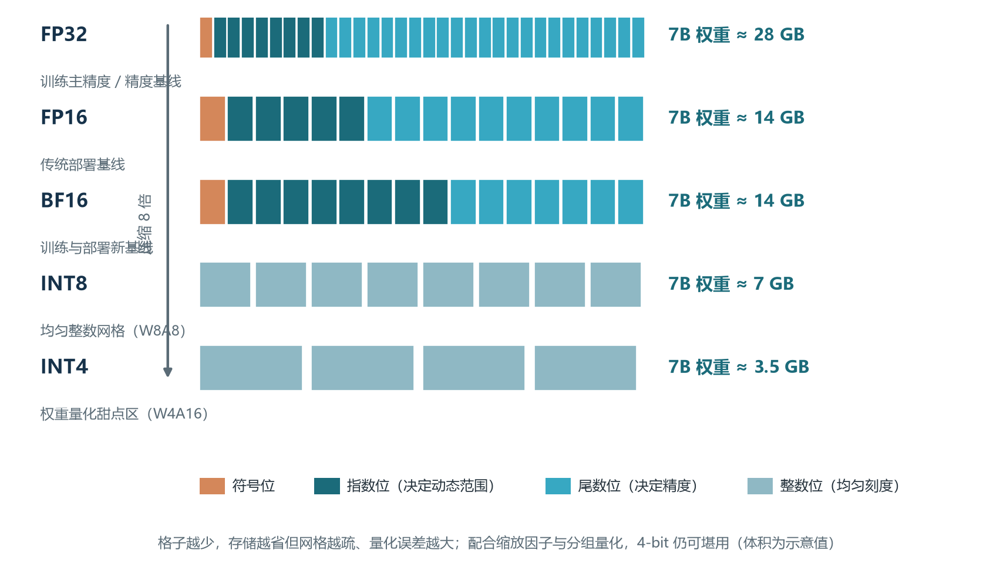
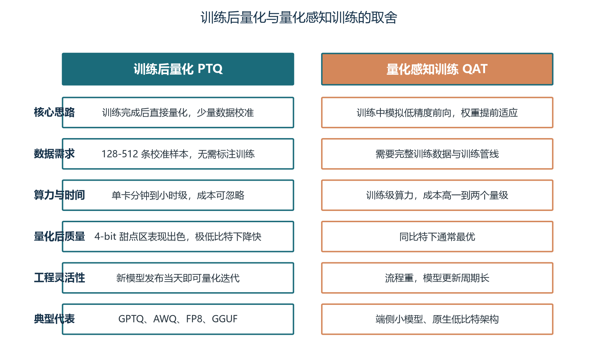
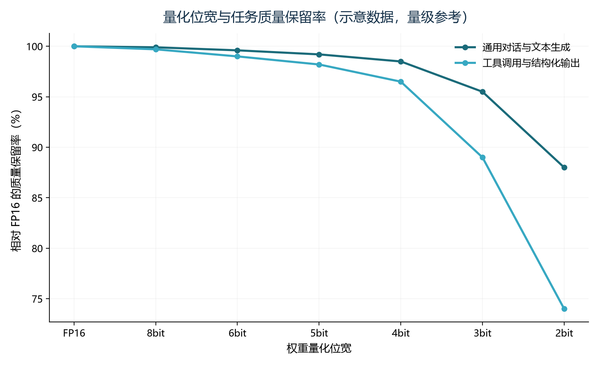
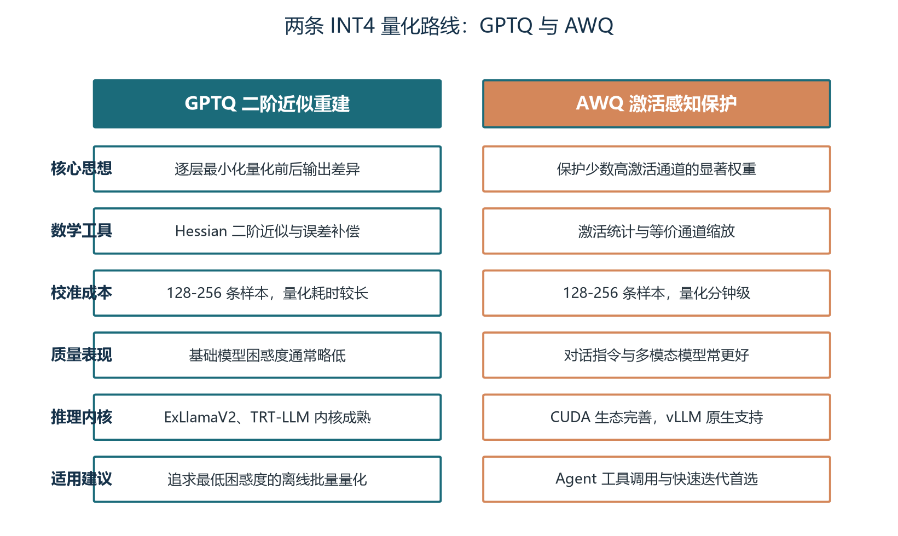
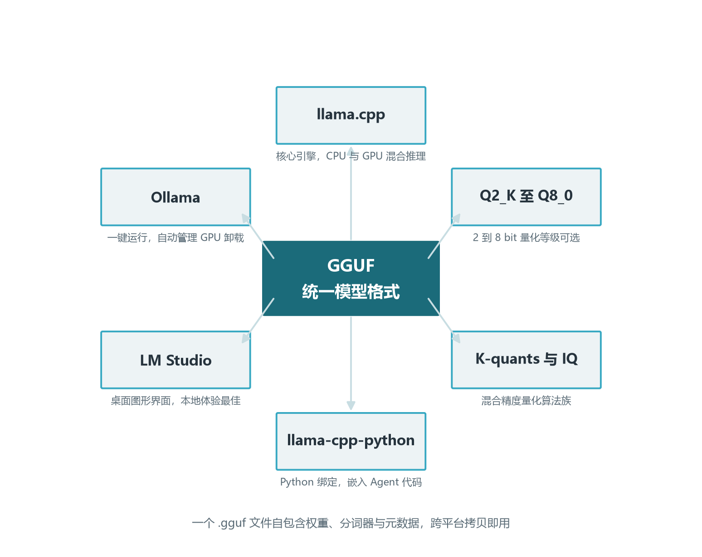
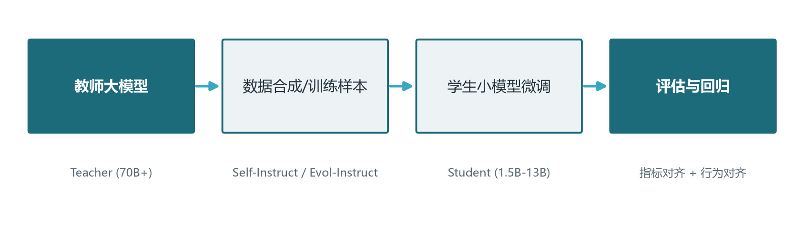
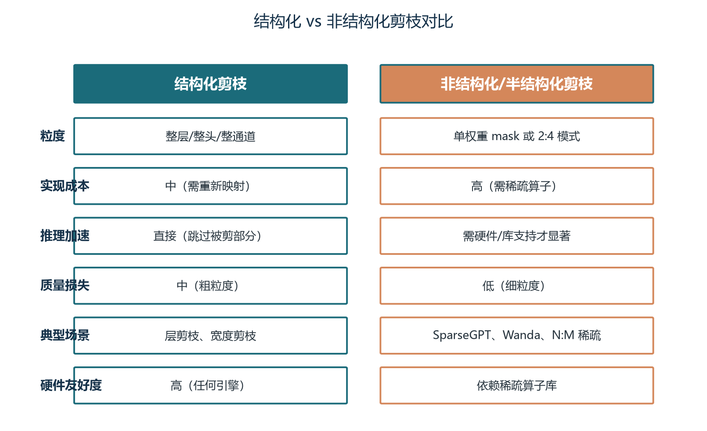
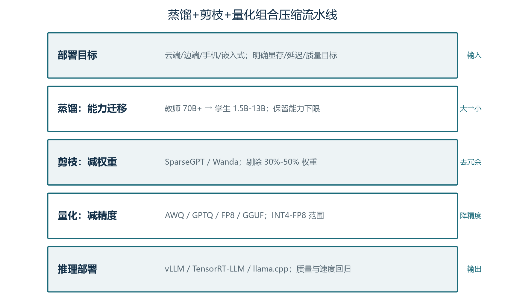

前言：把大模型装进更小的显存与预算
上一卷我们走进推理引擎内部，看到了 PagedAttention、连续批处理、KV Cache 是怎么把一张 GPU 的吞吐榨到极限的。但推理优化有一个更上游、更暴力的杠杆——直接把数字“变小”。70B 的模型若以 FP16 精度存储，权重就要吃掉约 140 GB 显存，单张 A100 或 H100 的 80 GB 装不下；即使装得下，单请求的成本也会让中等规模的服务在账面上流血。把权重从 16 位压到 4 位，体积缩到约 35 GB，单卡部署变得可能；把激活与 KV Cache 也压到 8 位，长上下文推理的显存墙被直接推倒。这就是模型量化（Quantization），本卷的主题。
量化不是单一招数，而是一组互为补充的工程取舍。面向云端高吞吐服务的 FP8 路线、面向 NVIDIA 单卡部署的 AWQ/GPTQ 路线、面向本地与边缘设备的 GGUF/llama.cpp 路线——每条路线都在“质量、显存、吞吐、硬件兼容性”四个维度上做不同的权衡。Agent 系统尤其受量化影响：长上下文意味着 KV Cache 占显存的大头，工具调用意味着量化误差可能让 JSON 格式崩坏，循环执行意味着每次推理都要重复付一次“精度税”。理解这四条路线的工作原理、适用边界与组合方式，是 Agent 工程师必须掌握的成本工程能力。
在整套手册的版图里，量化位于卷一图1-4 六层技术栈中的推理层，是把“模型层”选出来的基座真正“跑得省”的关键一环。本卷按四章展开主干：第一章建立量化的成本账与位宽科普，第二章剖析 PTQ 与 QAT 的方法论与评估指标，第三章深入 GPTQ、AWQ、FP8、GGUF 四种主流方案，第四章落地到工具链实战与 Agent 场景的决策建议。学完本卷，你将能把“成本与质量的取舍”从模糊感觉变成可计算的工程问题。
学完本卷，你将能够：
- 算清一张 GPU 上不同位宽、不同 batch、不同上下文长度下的显存与成本账，知道 70B 模型能不能装下单卡；
- 区分 FP32、FP16、BF16、INT8、INT4、FP8 六种数值格式，理解它们在动态范围、精度与硬件支持上的差异；
- 解释 PTQ 与 QAT 的根本区别、对称与非对称量化的工程含义、分组量化为何是 4-bit 必备；
- 用一段话讲清楚 GPTQ（二阶近似）、AWQ（激活感知）、FP8（Hopper 原生）、GGUF（本地生态）四条路线的核心思想与优劣；
- 在给定的硬件、场景与质量约束下，选出最合适的量化路线，并能在落地后建立“校准→自动基准→人工抽检”的评估流水线；
- 针对 Agent 工具调用、长上下文 KV 量化、财务数值计算三类特殊场景，给出可执行的量化配置建议。
本卷的位宽、显存、成本数据均为示意量级；不同模型、不同校准集、不同推理引擎下的具体数值会有 ±20% 至 ±50% 的波动。建议把本卷当作决策框架来读：先理解“四维权衡”的思想，再带着自家业务的硬约束（GPU 型号、上下文长度、质量阈值）回到第四章的选型决策树。文中出现的代码示例以“可读性优先”做了简化，工程落地时请结合最新版官方文档与评估脚本。动手复现建议使用 7B-8B 级别的开源模型，普通显卡即可完成量化和初步推理，70B 级别的完整实验可放到云端 GPU 环境。
关于量化与推理优化的关系值得先说清楚。卷五介绍的 PagedAttention、连续批处理、前缀缓存优化的是“模型跑起来后”如何把硬件榨干；本卷介绍的量化优化的是“模型本身有多大”。两者是乘性关系：把权重从 FP16 压到 INT4，体积降到 1/3.5，KV Cache 从 FP16 压到 INT8 又能再降一倍，叠加 PagedAttention 与前缀缓存后，长上下文场景下的总显存可以压缩到原始部署的 1/5 到 1/8。这意味着同样的硬件可以服务 5 到 8 倍的用户，或者同样的预算可以买 1/3 的卡。理解这条乘性关系，是把“推理成本”从“不可控账单”变成“可设计参数”的起点。
第一章 为什么 Agent 需要量化：成本账、量化本质与位宽科普
1.1 一笔显存的账：从 7B 到 70B，模型到底吃掉多少资源
让我们先算一笔账。以 Llama 系列模型为例，权重体积与参数数量呈线性关系：每个参数在 FP16 下占 2 字节，7B 模型约占 14 GB，13B 约占 26 GB，70B 约占 140 GB。但“权重体积”只是基线，真正决定能否装下一张卡的，是运行时的总显存。总显存至少包含四项：模型权重、KV Cache、激活值与框架开销。其中 KV Cache 与序列长度和 batch 大小呈线性关系，激活值随 batch 与上下文陡峭变化。三者叠加之后，70B 模型即使以 FP16 精度运行，也需要约 200 GB 的总显存才能跑 4K 上下文、batch=1 的推理——单卡装不下，必须多卡拆分或采用张量并行。
量化改变的就是这条曲线。把权重从 FP16 压到 INT4，体积直接降到 35 GB；把 KV Cache 从 FP16 压到 INT8，再降一倍；把激活值用 FP8 跑，吞吐还能再翻一倍以上。三项叠加，70B 模型的部署门槛从“两张 H100”降到“一张 H100”或“两张 4090”，单位 Token 的推理成本也相应下降 60% 到 80%。对于需要长上下文、多并发、多轮对话的生产 Agent 服务，这套压缩是把账算得过来的关键。
这笔账还有另一面：量化本身有成本。PTQ 流程需要少量校准数据与数分钟到数小时的 GPU 时间；QAT 则需要完整的训练流程与算力。但与“持续按月支付的推理账单”相比，量化的前期成本通常是“小数点后一位”，而收益是终身的。对自部署团队来说，量化与微调并列为两项最重要的成本工程能力。
1.2 量化的本质：用更少的格子装下同样的数
量化（Quantization）听起来玄妙，核心动作只有一句话：把高精度的数字映射到低精度的表示上。FP16 能表示 65536 个不同的数值（1 位符号、5 位指数、10 位尾数），INT4 只能表示 16 个。把原来分布在 65536 个格子里的数字“搬”到 16 个格子里，必然会有多个数字被合并——这就是量化误差的来源。量化的全部学问，就是设计一种“搬法”，让被合并的数字造成的损失最小。
具体怎么搬？最简单的办法是线性映射。先算出原始数字的最大值（或绝对值最大值），用最大值除以新格式能表示的最大整数，得到一个缩放因子（scale）；然后用每个数字除以 scale，得到一个整数；存储时只存整数和 scale，反量化时再乘回来。这叫对称量化（Symmetric Quantization），假设分布以零为中心。如果原始分布整体偏置明显，还需要再加一个零点（zero-point），让整数域能滑动到任意位置，这叫非对称量化（Asymmetric Quantization）。对称量化计算简单，非对称量化更灵活，两者各有适用场景。
真正决定量化质量的是“分组的颗粒度”。如果对整个权重矩阵共用一个 scale，那 70B 模型中不同层、不同通道的巨大差异会被压平，质量损失很大。分组量化（Group Quantization）把权重切成长度为 group_size 的小块（常用 128），每个小块算自己的 scale 和 zero-point。这一做法让“动态范围”大的小块用大格子、“动态范围”小的小块用密格子，相当于给每个小区一套独立尺子。在 INT4 量化中，分组几乎是“必选”，group_size 128 是 AWQ、GPTQ、GGUF 的事实标准。
这套“映射+分组”的机制听起来朴素，却正是后面所有高级算法的根基。AWQ 的“通道缩放”、GPTQ 的“二阶重建”、GGUF 的“K-quants”，都是在标准映射的基础上，针对“哪些数字更重要”“哪些格子能省”两个问题做了优化。

1.3 位宽科普：从 FP32 到 FP8，六种格式各擅其场
工程师刚接触量化时最容易迷路的就是一串数字：FP32、FP16、BF16、INT8、INT4、FP8。它们的差异不在“是不是浮点”，而在“每个数字用多少格子、格子怎么分”。下面这张表把六种主流格式的核心特征摆在一起，建议先扫一遍，后面遇到时再回查。
| 格式 | 位宽 | 结构 | 动态范围 | 精度特点 | 典型用途 |
|---|---|---|---|---|---|
| FP32 | 32 | 1+8+23 | 约 1.4e-45 到 3.4e38 | 高精度基线 | 训练主精度、量化校准参考 |
| FP16 | 16 | 1+5+10 | 约 6.5e-5 到 6.5e4 | 精度较高、动态范围有限 | 推理部署传统基线 |
| BF16 | 16 | 1+8+7 | 与 FP32 动态范围一致 | 尾数短，精度低于 FP16 | 训练与部署新基线 |
| INT8 | 8 | 均匀整数网格 | 固定 256 级 | 均匀步长，对小数值友好 | 权重量化、KV Cache 量化 |
| INT4 | 4 | 均匀整数网格 | 固定 16 级 | 动态范围小、需缩放 | 权重量化主流、显存节省大 |
| FP8 | 8 | E4M3 或 E5M2 | 介于 INT8 与 FP16 之间 | 浮点分布，对离群值友好 | Hopper 架构原生支持 |
FP32 是“完整数字”，每个数字 32 位格子，1 位符号、8 位指数、23 位尾数，精度足够但体积太大，70B 模型用 FP32 存储需要约 280 GB，单机装不下。FP16 把位数砍到 16，1 位符号、5 位指数、10 位尾数，动态范围约 6.5e-5 到 6.5e4，精度对绝大多数推理任务已经足够。BF16 的指数位与 FP32 一致（8 位），但尾数位只有 7 位，牺牲精度换更宽动态范围——训练时更稳定，因为梯度常常需要很宽的动态范围。FP16 与 BF16 各擅其场：FP16 适合推理部署（精度优先），BF16 适合训练（稳定性优先）。但 FP16 在训练中有一个著名陷阱：梯度如果超出 FP16 动态范围（特别是在 LayerNorm 与 Attention 分数中出现极大值时），会变成 inf 或 NaN，导致训练崩溃；这就是为什么现代训练框架默认用 BF16 而非 FP16。
关于“格子”的理解值得展开。FP16 的 16 位格子中，5 位指数意味着它能表示 2 的 0 到 31 次方的范围（去掉符号位后），但每个指数下只有 1024 个（10 位尾数）具体的“刻度位置”。所以 FP16 在 1.0 到 2.0 之间有 1024 个刻度（精度 0.001），但在 1000 到 2000 之间也只有 1024 个刻度（精度约 1）。这意味着 FP16 的精度是相对的，数字越大、绝对误差越大。INT8 的 256 个格子是均匀分布的（在量化范围内），所以 INT8 在小数值附近的精度反而比 FP16 高（FP16 在 0.001 附近只有极少的刻度）。FP8 的 E4M3 变体则介于两者之间：在 0 附近格子密、对大数值格子疏，兼具精度与范围。理解这个“格子分布”是后续理解“为何 FP8 对偏斜分布更友好”的关键。
INT8 与 INT4 是“整数格子”，把数字均匀分到 256 个或 16 个整数位置。整数量化的优势是硬件支持成熟（几乎所有 GPU 都为 INT8 提供 Tensor Core），劣势是对动态范围敏感：如果数字分布偏斜（少量极大值、多数小数值），整数格子的“密集区”会被拉得很开，小数值之间的相对误差会被放大。这就是为什么 INT8/INT4 量化一定要配合缩放因子与分组量化。
FP8 是 NVIDIA Hopper 与 Ada 架构新引入的 8 位浮点格式，分 E4M3（4 位指数、3 位尾数，精度优先）与 E5M2（5 位指数、2 位尾数，范围优先）两种变体。它是“浮点分布的 8 位版本”：在 0 附近格子密、对大数值格子疏，对偏斜分布天然友好。硬件上 H100/H200 的 Tensor Core 原生支持 FP8 矩阵乘，峰值算力约为 FP16 的两倍（密集峰值；稀疏场景下更显著）。这把“既要 8 位的低显存、又要接近 FP16 的精度”两件事第一次同时满足。
1.4 为什么 4-bit 是 Agent 部署的甜点区
把位宽继续往下压会带来什么问题？我们看一条经验曲线：从 FP16 降到 8-bit，模型体积压缩约 2 倍，困惑度上升约 0.0 到 0.1，几乎无感；从 8-bit 降到 4-bit，体积再降 2 倍，但困惑度上升 0.1 到 0.3（示意量级），通用任务准确率仍能保留 98% 以上；从 4-bit 降到 3-bit，质量下降开始明显，准确率损失进入“不可忽略”区间；2-bit 以下的方案基本只能用于演示或极端内存受限场景。
4-bit 之所以成为 Agent 部署的甜点区，是因为它在三个维度上同时达到了工程可接受的平衡。显存维度：INT4 权重让 70B 模型从 140 GB 降到约 35 GB，单卡部署成为可能。质量维度：精心选择算法与超参后，4-bit 在通用对话、代码生成、工具调用等任务上能保留 97% 到 99% 的能力。生态维度：AWQ、GPTQ、GGUF、FP8 PTQ 都以 4-bit 为主战场，工程文档、推理内核、评估脚本最为成熟。低于 4-bit 的方案要么质量抖动大，要么生态不完善，要么两者兼有；高于 4-bit 的方案压缩收益不明显。因此本卷讨论的“量化”默认指 4-bit 与 8-bit 两个区段。

1.5 量化在 Agent 推理链路中的位置
把视角拉回到 Agent 推理链路：一次完整的工具调用任务，通常包含多轮“模型推理+工具调用+结果回填”。每一轮推理都需要加载模型权重、计算激活值、生成 KV Cache，这些都受量化精度影响。权重量化降低模型本体的显存与带宽需求，激活量化影响每一层的中间结果，KV Cache 量化决定长上下文的显存占用。三者中，权重量化是最容易也最常用的一招（PTQ 几乎人人能做），激活量化需要硬件与引擎协同（FP8 INT8 GEMM），KV Cache 量化对长上下文 Agent 意义重大但需要谨慎评估。
还有一个常被忽略的细节：量化模型在不同推理引擎上的表现差异极大。同一个 AWQ INT4 模型，在 vLLM 上每张 A100 能跑到 X tok/s（示意量级），在 ExLlamaV2 上能跑到 1.2X tok/s，在原版 Hugging Face Transformers 上可能只跑 0.3X tok/s。选量化方案的同时也要选推理引擎，两者共同决定最终的吞吐与延迟。
W4A16 表示权重量化到 4-bit、激活保持 16-bit；W8A8 表示权重与激活均量化到 8-bit。前者只需 PTQ 即可获得质量稳定，后者需要硬件支持（FP8 或 INT8 Tensor Core）与激活校准。Agent 部署中 W4A16 是最常见的起步选择，W8A8 在 Hopper 架构上能进一步提升吞吐。
第二章 量化方法论：PTQ 与 QAT、评估指标与分组策略
2.1 训练后量化与量化感知训练：两条工程路径
量化方法按是否需要重训练可分为两类：训练后量化（Post-Training Quantization, PTQ）与量化感知训练（Quantization-Aware Training, QAT）。两者的差别看似只是“要不要训练”，背后却是完全不同的工程权衡。PTQ 直接在已训练好的模型上执行量化，只需要少量校准数据来估计缩放因子与零点，或进行层重建。AWQ、GPTQ、FP8 PTQ、GGUF 的静态量化都属于 PTQ 范畴。QAT 则在训练过程中模拟低精度前向传播，让模型权重提前适应量化误差，通常能获得最优精度，但需要完整的训练数据、训练管线与算力。
对于动辄数百亿参数的基座模型，QAT 的成本几乎不可承受。重新训练 70B 模型即使只用 LoRA，也需要数十张 GPU 与数周时间；而 PTQ 只需要 128-256 条校准样本与单卡数小时。因此，本卷重点讨论 PTQ，QAT 仅在涉及小模型或极致精度场景时简要提及。这条决策线在卷一图1-4 推理层里也清晰：PTQ 是工程默认，QAT 是少数派的精细打磨。
PTQ 与 QAT 的另一个差异在迭代速度上。基座模型每隔几周就更新版本，Agent 团队的工程节奏也以周为单位；如果每次模型升级都要重训，工作流会被完全打乱。PTQ 流程通常以脚本化、参数化的方式实现，从加载原模型到产出量化模型可以做到“一键运行”，便于快速 A/B 测试与回滚。这意味着在 Agent 项目中，量化策略应当被视为“可快速重做的工程能力”，而不是“一锤子买卖”。
2.2 PTQ 内部的三大类算法：静态、动态与重建
PTQ 内部又可细分为三类方法，其复杂度与质量逐级提升。静态 PTQ 最简单：在校准数据上统计每层激活的分布，确定 scale 与 zero-point，量化后固定不动。这种方法速度快、内存友好，但忽略了“不同输入分布差异大”的事实。动态 PTQ 在推理时实时计算激活分布，精度更好，但每一步都要做统计运算，会拖慢推理速度。重建类 PTQ（Reconstruction-based PTQ）走得更远：它假设量化误差可以看作“扰动”，并通过优化算法（如 GPTQ 的二阶近似）逐层补偿这种扰动，让每层输出与全精度模型尽量一致。GPTQ 属于这一类，AWQ 也带有重建成分。
这三类方法的工程含义清晰：静态 PTQ 适合快速实验与低比特场景（如 INT3、INT2），动态 PTQ 适合对延迟不敏感、对精度敏感的场景，重建类 PTQ 是 4-bit 量化的主流，AWQ 与 GPTQ 都是重建类的代表。Agent 部署中默认走重建类，因为质量天花板最高且生态最成熟。
2.3 评估指标：困惑度、任务准确率与 Agent 专用指标
量化模型的评估不能只看模型体积，更要关注能力保留程度。学术界与工业界常用四类指标，每类指标关注的能力侧面不同。困惑度（Perplexity, PPL）衡量语言模型对测试集的预测能力：把一段文本喂给模型，看它对下一个 Token 的预测分布有多“尖锐”。PPL 上升 0.1-0.3 通常被认为是可接受的，超过 1 则往往伴随明显质量下降。PPL 的优势是计算快、可复现，劣势是“不能反映具体任务能力”——一个 PPL 仅上升 0.2 的模型，在工具调用上可能下降 5%。
第二类是下游任务准确率。MMLU 衡量多领域知识与推理，GSM8K 衡量数学推理，HumanEval 衡量代码生成，TruthfulQA 衡量真实性。开源社区常用 OpenLLM Leaderboard 综合排序。一个常见的工程经验是：4-bit 量化后 MMLU 恢复 99% 以上、HumanEval 恢复 98% 以上，可视为“无明显下降”。
第三类是文本相似度，包括 ROUGE、BERTScore、Semantic Textual Similarity 等，用于衡量量化模型与全精度模型生成文本的一致性。这类指标适合做 A/B 对照实验，但在“质量差不多但具体内容不同”的情况下区分能力有限。
第四类是 Agent 专用指标。工具调用准确率（Tool-call Accuracy）衡量模型能否在多步任务中正确选择工具与参数；JSON 结构化输出合规率衡量模型能否生成合法 JSON、参数顺序与类型是否正确；多轮对话一致性衡量在压缩 KV Cache 或长上下文情况下，模型是否仍然记得前文约定。这一类指标无法在通用基准上测，必须用业务评估集——这也是本卷强调“业务级评估流水线”的原因。
2.4 对称、非对称与分组量化：颗粒度的工程选择
把 PTQ 的基本动作分解开，三件工程选择决定了最终质量与文件体积。对称量化的 scale 单一、zero-point 为 0，计算简单，适合权重近似零均值的情况。LLM 权重经过 LayerNorm、线性层叠加后通常近似零均值，因此权重量化普遍使用对称方案。激活值则常常有明显偏置（如 ReLU 后只有正数），因此激活量化更倾向非对称方案，需要额外的 zero-point 存储。非对称量化的代价是多存一组零点参数，但在质量敏感的 4-bit 场景下常常值得。
分组量化（Group Quantization）是 4-bit 量化的必选项。整层共用一个 scale 会让动态范围差异巨大的权重被强行压到同一组整数格子，部分权重“扎堆”到边界，误差巨大。把每行权重按 group_size（常见 128）切块、每块独立计算 scale，相当于给每个小区一套独立尺子。group_size 越小精度越高，但存储的 scale/zero-point 越多，文件体积略增；group_size 越大存储越省，但精度会下降。128 是经验平衡点，被 AWQ、GPTQ、GGUF 同时采用。
还有一种更细的颗粒度选择：子通道（sub-channel）量化。它把每个权重元素当作独立一组，理论上精度最高，但存储开销大、硬件不友好。除非有特定引擎支持，工程上一般不采用。
2.5 量化误差的来源：四类典型问题
量化误差并非“随机噪声”，它的来源可以归纳为四类，每类都有对应的工程对策。第一类是数值溢出与截断：当原始权重绝对值过大，超过目标格式能表示的最大值，会被截断到边界。group_size 切小可以缓解，因为每组内最大值会被 scale 重新映射。
第二类是离群值（Outlier）冲击：少数权重幅度远大于其他权重（如某些通道的权重集中在 ±10），它们会撑大 scale，让其余权重被迫挤在格子密集区。SmoothQuant、AWQ 的通道缩放、FP8 的 per-tensor 缩放，都是为这类问题设计的对策。
第三类是分布偏斜：如果权重分布不是关于零对称，非对称量化能更好地适应；如果分布近似均匀但跨度大，分组量化能局部挽救；如果分布有长尾，FP8 的浮点分布比 INT8 的均匀分布更友好。
第四类是结构敏感：某些层（如 Attention 的 QKV 投影、最后一层输出）对误差特别敏感，K-quants、AWQ、FP8 都对“敏感层用更高精度”做了专门处理。理解这四类来源，才能在自家模型上对症下药——而不是盲目套用别人的超参。
2.6 量化超参速查表
主流工具的超参数命名略有差异，但核心概念一致。下表把 AWQ、GPTQ、FP8 PTQ 三类常用超参摆在一起，工程调优时可直接对照。
| 参数 | AWQ | GPTQ | FP8 PTQ | 推荐起点 |
|---|---|---|---|---|
| 权重量化位宽 | w_bit=4 | bits=4 | 通常 8-bit | 4-bit 主流，8-bit 高质量 |
| 分组大小 | q_group_size=128 | group_size=128 | N/A（per-tensor） | 128 |
| 是否用零点 | zero_point=True | desc_act=False | 不适用 | True |
| 阻尼 / 数值稳定 | alpha=0.5-1.0 | damp_percent=0.01 | scaling strategy | alpha 网格寻优 |
| 校准样本数 | 128-256 条 | 128-256 条 | 256-512 条 | 覆盖业务分布 |
| 内核版本 | GEMM/GEMV | Triton | ExLlamaV2/TRT-LLM | 批量选 GEMM |
这套超参是“工程经验起点”，不是“最优配置”。实际项目中必须用业务评估集做网格搜索：在 128/256 样本量、group_size=64/128/256、alpha=0.5/0.75/1.0 等几个关键维度上交叉验证，找到“质量达标、文件最小、速度最快”的组合。把超参选择写进团队的量化 SOP，是工程成熟度的标志。
2.7 校准数据选取：分布代表性的工程含义
校准数据看上去是“边角料”，实际上决定了量化算法的成败。校准的核心目的是让量化算法看到目标分布：在什么位置出现多少激活值、激活值的动态范围有多大、有没有显著的离群通道。如果校准数据与生产输入分布不一致，量化算法可能“猜偏”——比如在新闻语料上做校准，但生产 Agent 是工具调用场景，激活分布差异巨大，量化误差就会集中爆发在生产环境的真实输入上。
工程上推荐三类校准数据组合使用。第一类是基础语言校准：选 64-128 条涵盖中英文、技术与生活话题的通用段落，用于保证语言建模能力不退化。第二类是任务校准：用 64-128 条与生产场景对齐的样本——Agent 项目应使用真实工具调用模板、JSON 输出片段、多轮对话片段。第三类是边界 case：补 16-32 条超长输入、特殊字符、嵌套 JSON，用于检查极端情况下的量化稳定性。三类加起来 128-256 条即可，覆盖绝大多数场景。
还有一个常被忽略的细节：校准数据应当与生产评估集严格分离。如果校准集里混入了评估集样本，量化算法就会“作弊”——它在评估集上看起来很好，但泛化到生产数据上就会暴露真实差距。这是量化评估中最常见的“虚高”现象，必须用版本管理工具（Git LFS、DVC）把校准集与评估集分开存储并加哈希校验。

第三章 四大量化路线详解：GPTQ、AWQ、FP8 与 GGUF
3.1 GPTQ：基于二阶近似的一次性后训练量化
GPTQ 的思想可追溯到 1990 年代的 Optimal Brain Damage 与 Optimal Brain Surgeon 系列工作——它们在神经网络剪枝与量化中使用二阶近似，以最小化修改一个参数所产生的影响。2022 年，Frantar 等人提出 Optimal Brain Quantization（OBQ），把这一框架扩展到量化场景：每量化一个权重后，根据 Hessian 矩阵信息更新其余未量化权重，以补偿引入的误差。OBQ 的数学目标可以写作 argmin_Ŵ ||WX - ŴX||²²，其中 W 是原权重、Ŵ 是量化后权重、X 是该层的校准输入。Hessian 矩阵 H = 2XXᵀ 反映输入分布对输出误差的敏感度。
OBQ 的问题在于计算复杂度过高：每量化一个权重都要更新一次剩余权重与 Hessian 矩阵，对大模型非常慢。GPTQ 在 OBQ 基础上做了三项关键简化，使其能一次性处理十亿参数模型。第一是固定列顺序：不再贪心选择最优量化顺序，而是按列索引顺序处理。实验表明，由于 Hessian 补偿已经吸收了大部分误差，顺序影响不大。第二是批量更新：将列分成大小为 128 的块，块内累积误差、块末统一更新剩余权重，显著减少 GPU 访存次数。第三是 Cholesky 分解：一次性对 Hessian 矩阵做 Cholesky 分解并求逆，避免迭代更新带来的数值不稳定。
GPTQ 在工程上有三个突出优点。第一是 perplexity 恢复好：因为做了二阶重建，量化后困惑度通常略优于 AWQ，特别适合以“文本生成质量”为核心指标的场景。第二是推理生态成熟：ExLlamaV2、TensorRT-LLM、vLLM 都对 GPTQ 内核做了深度优化，在 4090/3090 等消费级 GPU 上也能提供高吞吐。第三是模型支持广：AutoGPTQ 适配了从 Llama、Qwen 到 Mistral 的几乎所有主流架构。代价则是量化时间长：量化一个 70B 模型通常需要数十分钟到数小时，且对模型结构敏感（某些 MoE 模型需要特殊处理）。在极低比特（如 INT3、INT2）下质量下降明显，不建议生产使用。
GPTQ 的算法伪代码值得在这里完整展示，便于工程师理解“一次性量化”究竟做了哪些事。下面这段代码来自 AutoGPTQ 的核心实现，做了适当简化：
def gptq_quantize(W, X, bits=4, group_size=128, block_size=128, damp=0.01):
H = 2 * X @ X.T
H[range(H.shape[0]), range(H.shape[0])] += damp * H.diagonal()
H_inv = torch.linalg.inv(torch.linalg.cholesky(H)).T
Q = torch.zeros_like(W)
for col_start in range(0, W.shape[1], block_size):
col_end = min(col_start + block_size, W.shape[1])
W_block = W[:, col_start:col_end].clone()
Err = torch.zeros_like(W_block)
H_inv_block = H_inv[col_start:col_end, col_start:col_end]
for j in range(col_end - col_start):
w = W_block[:, j]
scale = compute_scale(w, group_size=group_size, bits=bits)
q = torch.round(w / scale).clamp(-2**(bits-1), 2**(bits-1)-1)
Q[:, col_start + j] = q
delta = (w - q * scale) / H_inv_block[j, j]
Err[:, j] = delta
W_block[:, j+1:] -= delta.unsqueeze(1) * H_inv_block[j, j+1:].unsqueeze(0)
W[:, col_end:] -= Err @ H_inv[col_start:col_end, col_end:]
return Q这段伪代码的每一行都对应一个工程决策。阻尼项 damp 防止 Hessian 矩阵奇异，避免数值不稳定；block_size=128 在 GPU 显存占用与更新粒度之间取平衡；H_inv 的 Cholesky 求逆一次性完成，避免迭代误差累积。理解这段代码，对调试“量化质量在某层突然崩了”类问题非常有帮助——常见原因是 Hessian 矩阵在该层奇异、阻尼不够，或 block_size 切分覆盖了关键权重。
3.2 AWQ：激活感知的显著权重保护
AWQ 由 MIT 韩松团队于 2023 年提出，2024 年获得 MLSys 最佳论文奖。它的核心发现是：大语言模型中只有约 0.1% 到 1% 的权重是“显著权重”（salient weights），它们对模型输出质量起着决定性作用。只要保护这些权重不被量化误差严重破坏，就能显著降低整体量化损失。关键问题在于：如何识别显著权重？传统思路可能观察权重本身的大小，但 AWQ 提出了一个反直觉且深刻的洞察：权重的重要性应该由其对应的输入激活（activation）幅度决定。
具体来说，如果某个输入通道的激活值普遍较大，说明该通道承载了更重要的特征；与该通道相乘的权重即使绝对值不大，一旦引入量化误差，也会被放大并影响输出。简单粗暴的保护方式是把显著权重保留为 FP16、其余量化为 INT4，但这会导致不规则的内存访问与计算图碎片化。AWQ 采用数学上等价的“按通道缩放”策略：将显著权重通道乘以大于 1 的缩放因子，同时把对应的输入激活除以同一因子。由于线性层满足 y = (W·diag(s))·(diag(s)⁻¹·x) = W·x，缩放前后前向传播结果不变。
缩放之后，显著权重通道的绝对值变大，在量化到 INT4 时落在更密集的表示区间，相对量化误差被缩小；而非显著通道被缩小，其量化误差虽然也按比例变化，但对输出的影响被等比例抑制。缩放因子 s_i 通常取为激活通道绝对值的 α 次幂：s_i = (mean_j |X_{i,j}|)^α，α 是可搜索参数，常见取值 0.5 到 1.0。实际校准只需 128 到 256 条样本做一次前向传播统计激活均值即可得到 s，不需要反向传播，跨模型架构与跨任务泛化能力强。
AWQ 在工程上有三个突出优点。第一是量化速度快：通常分钟级即可完成 7B-13B 模型的 INT4 量化，便于模型迭代。第二是 Agent 工具调用准确率影响小：工具调用的输出包含结构化字段（函数名、参数名、JSON 键），这些字段在训练数据中反复出现，对应的权重通道通常被 AWQ 识别为“显著”并加以保护。第三是推理生态完善：Hugging Face、vLLM、TensorRT-LLM、TinyChat 均已集成 AWQ 内核，TinyChat 在桌面与移动端 GPU 上比 Hugging Face FP16 实现快 3 倍以上。代价则是仅支持 NVIDIA GPU 与 CUDA 优化，对 CPU 与 Apple Silicon 不友好；极限吞吐不如 W8A8 或 FP8，因为激活保持 FP16。

3.3 FP8：面向 Hopper 架构的 8-bit 浮点推理
FP8 是 NVIDIA 在 Hopper（H100/H200）与 Ada Lovelace 架构中引入的 8-bit 浮点格式，分两种变体：E4M3（1 位符号、4 位指数、3 位尾数，精度高、动态范围小，适合权重与激活）与 E5M2（1 位符号、5 位指数、2 位尾数，动态范围大，适合梯度）。TensorRT-LLM 与 vLLM 在推理中主要使用 E4M3。
FP8 的核心价值在于三点。第一是硬件原生支持：H100/H200 的 Tensor Core 可以直接以 FP8 执行矩阵乘，峰值算力约为 FP16 的两倍（密集峰值示意；稀疏场景下更显著）。这意味着 W8A8 不再是“理论可”，而是“硬件直跑”。第二是更高精度：相比 INT8 的均匀打点，FP8 是浮点格式，对离群值与偏斜分布天然友好，可以在权重、激活、KV Cache 全部 8-bit 的情况下仍保持接近 FP16 的精度。第三是统一训练与推理：使用 FP8 训练后，推理可以直接复用 FP8 权重，无需额外的 INT8 校准与量化步骤。
Databricks 在 Llama2-70B-Chat 上的实验展示了 FP8 的典型收益：模型体积减小 50%、输出 Token 生成速度提升约 30%、综合吞吐提升约 2.2 倍、平均任务质量与 FP16 持平。这组数据（示意量级）说明 FP8 在云端高吞吐 Agent 服务中的位置——它不是“压缩”，而是“等效加速”。
FP8 的局限也很清楚。首先是硬件依赖：FP8 需要 Hopper 或 Ada 架构 GPU，A100 与消费级 GPU 不支持；这意味着基于 A100 或 4090 的旧部署方案无法直接迁移。其次是工具链成熟度：TensorRT-LLM 的 FP8 流程需要构建 engine，灵活性较低；vLLM 的 FP8 支持正在快速完善，但仍以 Hopper 为主。最后是长上下文质量：FP8 的 KV Cache 量化能进一步节省显存，但在超长上下文（如 >32K）时仍需仔细评估质量，特别是涉及多轮记忆与跨段推理的任务。
3.4 GGUF 与 llama.cpp 生态：本地与边缘部署的事实标准
GGUF（GPT-Generated Unified Format）是 llama.cpp 项目于 2023 年 8 月推出的二进制模型格式，用于替代早期的 GGML 格式。它不仅是存储格式，更是一套完整的“模型 + 元数据 + 分词器 + 量化信息”的打包方案——一个 .gguf 文件可以独立加载和运行，无需额外配置文件。相比 GGML，GGUF 的关键改进包括：自包含元数据（架构、超参、词表、特殊 Token 全部嵌入文件头）、可扩展性（新增字段不破坏旧版本兼容）、内存对齐（支持 mmap 内存映射实现快速加载）、灵活量化（支持 2-bit 到 8-bit 的多种量化级别，包括 K-quants、IQ-quants 等先进算法）。
GGUF 的量化等级丰富，命名规则通常为 Q{bits}_{variant}：Q 表示量化；bits 表示有效比特数（如 4、5、6、8）；_K 表示 K-quants（一种对敏感层用更高精度的混合精度方案）；_M/_S/_L 表示分组或质量级别。下表汇总常见 GGUF 量化等级（以 7B 模型为例，体积为示意量级）。
| 量化等级 | 有效 bit | 模型大小 | 质量 | 推荐场景 |
|---|---|---|---|---|
| Q2_K | 2.5 | 约 2.8 GB | 低 | 极端内存受限、演示 |
| Q3_K_M | 3.3 | 约 3.3 GB | 可接受 | 内存非常紧张 |
| Q4_K_S | 4.0 | 约 3.8 GB | 较好 | 追求速度 |
| Q4_K_M | 4.5 | 约 4.1 GB | 好 | 默认推荐 |
| Q5_K_M | 5.5 | 约 4.8 GB | 很好 | 质量优先 |
| Q6_K | 6.0 | 约 5.5 GB | 极佳 | 接近无损 |
| Q8_0 | 8.0 | 约 7.2 GB | 接近 FP16 | 最大质量 INT8 |
| F16 | 16 | 约 14 GB | 参考 | 验证与训练基线 |
Q4_K_M 之所以成为社区默认，是因为它在 7B 模型上仅占约 4.1 GB，同时质量损失通常小于 2%，在消费级 GPU 上能达到 25-40 tokens/s（示意）。对 Agent 工具调用，Q4_K_M 通常是“最小可行”量化级别；若对质量敏感，可升级到 Q5_K_M 或 Q6_K。K-quants 的核心思想是 Transformer 中不同层对量化误差的敏感度不同：Attention 的 QKV 投影与输出投影对精度更敏感，FFN 中间层（gate/up/down）可以承受更低精度。因此 K-quants 对 Attention 权重使用 6-bit 或更高精度、对 FFN 使用 4-bit 或 5-bit，在相同平均比特下获得更高质量。配合 --imatrix 重要性矩阵，llama-quantize 可以根据校准数据动态分配精度，进一步降低低 bit 下的质量损失。
GGUF 的最大优势是生态广、门槛低、可离线。它让 Agent 能在没有稳定网络或高端 GPU 的环境中运行——办公内网服务器部署内部知识库 Agent、移动设备或边缘盒子跑本地化客服 Agent、Apple Silicon 笔记本做开发调试。局限是推理吞吐通常低于 vLLM/TensorRT-LLM 等服务器级引擎，不太适合高并发在线服务；不同 GGUF 量化等级的质量差异较大，必须根据 Agent 任务选择合适的级别。

3.5 四条路线的横切对比
把 GPTQ、AWQ、FP8、GGUF 四条路线摆在同一张图上比较，可以看清各自的生态位。GPTQ 走的是“数学最优”路线：二阶近似重建、模型支持最广、perplexity 通常最低；适合追求最低困惑度的离线批量量化与对延迟极敏感的消费级 GPU 部署。AWQ 走的是“工程最优”路线：激活感知保护、量化分钟级、CUDA 生态完善；适合 Agent 工具调用与快速迭代场景。FP8 走的是“硬件加速”路线：Hopper 原生支持、W8A8 等效加速、精度最接近 FP16；适合云端高吞吐 Agent 服务与对延迟要求严格的在线推理。GGUF 走的是“本地覆盖”路线：跨平台兼容、CPU/GPU 混合推理、离线运行；适合边缘设备、办公内网与开发调试。
这四条路线并非互斥，而是面向不同硬件、延迟、质量与成本的取舍。大型 Agent 服务通常以“FP8 + AWQ/GPTQ”为生产层（云端高并发）、以“GGUF”为边缘与本地层（开发与离线），形成分层部署。本章末尾会给出选型决策树。
3.6 量化路线的工程数据对比
把四条路线放在同一张数据表上对比，可以帮助量化选择时心里有“数”。下表以 Llama-3-8B-Instruct 为基座模型，给出典型部署场景下的关键指标（均为示意量级，实际数据需以自家评估为准）。
| 指标 | FP16 基线 | AWQ INT4 | GPTQ INT4 | FP8 | GGUF Q4_K_M |
|---|---|---|---|---|---|
| 权重大小 | 16 GB | 约 4.5 GB | 约 4.5 GB | 8 GB | 约 4.6 GB |
| 相对压缩 | 1.0× | 3.5× | 3.5× | 2.0× | 3.5× |
| 典型显存（含 KV 与激活） | 约 20 GB | 约 8 GB | 约 8 GB | 约 12 GB | 约 6 GB |
| WikiText PPL 变化 | 基线 | +0.1 至 +0.3 | +0.1 至 +0.3 | +0.0 至 +0.1 | +0.2 至 +0.5 |
| MMLU 恢复率 | 100% | 约 99.5% | 约 99.5% | 约 99.8% | 约 99.0% |
| HumanEval 恢复率 | 100% | 约 99.0% | 约 98.9% | 约 99.8% | 约 98.0% |
| 工具调用恢复率 | 100% | 约 98% | 约 98% | 约 99% | 约 97% |
| 量化耗时（单卡 7B） | 无 | 分钟级 | 约 30-60 分钟 | 分钟级 | 分钟级 |
| 主要推理引擎 | Transformers | vLLM/TRT-LLM | ExLlamaV2/vLLM | vLLM/TRT-LLM | llama.cpp/Ollama |
这张表揭示了几条工程经验。第一是 4-bit 量化在通用任务上几乎“无感”，但工具调用恢复率比通用任务低 1-2 个百分点，是评估的关键维度。第二是 FP8 在恢复率上接近 FP16，差距在 1 个百分点以内，但需要 Hopper 硬件才能发挥优势。第三是 GGUF Q4_K_M 在量化生态中以“本地体验最佳”著称，但单请求延迟略高于 vLLM 上的 AWQ/GPTQ，因为没有专门的 GPU 算子优化——它的优势在于“哪里都能跑”，而不是“跑得最快”。
实际部署中，还有几个常被忽略的成本维度。第一个是冷启动延迟：FP16 与 INT4 模型的加载时间差异显著，70B FP16 加载可能需要 30-60 秒，INT4 模型可以缩短到 10-15 秒（示意量级），这对短任务的快速扩缩容有影响。第二个是功耗：低精度计算天然省电，INT4 在推理时 GPU 功耗约为 FP16 的 60-70%，长时间运行可显著降低电力成本。第三是兼容性：某些推理引擎对某些格式的内核优化仍在迭代中，部署前应当跑一次小规模压测而非直接信任官方基准。
第四章 工具链实战与 Agent 场景的量化决策
4.1 工具链全景：从量化到推理服务的工具矩阵
量化工具链可分为三层：量化层工具负责把原模型转换成量化格式；推理层引擎负责加载量化模型并提供 API；服务层在引擎之上提供 OpenAI 兼容接口、监控与多租户。下面这张表把当前主流工具摆在一起，工程选型时可对照使用。
| 工具 | 格式 | 特点 | 适用场景 |
|---|---|---|---|
| AutoAWQ | AWQ (INT4) | 低校准成本、Transformers 兼容 | 快速量化、聊天与 Agent 模型 |
| AutoGPTQ | GPTQ (INT4) | 二阶重建、模型支持广 | 追求最低 perplexity、离线批量量化 |
| bitsandbytes | LLM.int8()/NF4 | 无需校准、即插即用 | 实验、QLoRA 微调 |
| NVIDIA ModelOpt | FP8/INT8/INT4 | 生产级、TensorRT-LLM 原生 | H100 高吞吐服务 |
| llama.cpp | GGUF | CPU/GPU 混合、本地友好 | 边缘、个人电脑、离线 |
| TensorRT-LLM | 多格式 | 极致性能、复杂 | 云端生产部署 |
| vLLM | AWQ/GPTQ/FP8 | 高吞吐、PagedAttention | 在线服务、批量推理 |
| TGI（Text Generation Inference） | AWQ/GPTQ/FP8 | Hugging Face 出品 | gRPC/HTTP 企业级服务 |
| Ollama | GGUF | 一键运行、自动管理 GPU 卸载 | 本地原型、个人开发 |
选型经验法则：原型期用最轻的方案（Ollama 跑 GGUF，或 bitsandbytes 跑 NF4），验证期切换到正式工具（AWQ/GPTQ），生产期回归 vLLM/TGI 提供高吞吐 API。这条路线与卷五的推理引擎选型一脉相承——工具只是印证原理的载体，原理（量化位宽、算法、评估方法）十年不变。
4.2 llama.cpp：GGUF 转换与量化
llama.cpp 提供了两个核心工具：convert_hf_to_gguf.py（把 Hugging Face 模型转成 GGUF FP16）与 llama-quantize（量化到目标等级）。从 Hugging Face 模型到可加载的 INT4 GGUF，完整流程只需三步。
# 1. 克隆 llama.cpp
git clone https://github.com/ggerganov/llama.cpp.git
cd llama.cpp
pip install -r requirements.txt
# 2. 将 Hugging Face 模型转换为 GGUF（FP16）
python convert_hf_to_gguf.py ./llama-3-8b-instruct \
--outfile llama-3-8b-instruct-f16.gguf \
--outtype f16
# 3. 量化到 Q4_K_M（最常用起点）
./llama-quantize llama-3-8b-instruct-f16.gguf \
llama-3-8b-instruct-q4_k_m.gguf Q4_K_M
# 4. 直接推理
./llama-cli -m llama-3-8b-instruct-q4_k_m.gguf \
-p "User: 帮我查一下北京的天气。\nAssistant:" -n 128如果希望进一步提升低 bit 量化质量，可以先计算重要性矩阵（imatrix），再用 imatrix 辅助量化：
# 计算重要性矩阵
./llama-imatrix -m llama-3-8b-instruct-f16.gguf \
-f calibration.txt -o model.imatrix
# 使用重要性矩阵进行更优量化
./llama-quantize --imatrix model.imatrix \
llama-3-8b-instruct-f16.gguf \
llama-3-8b-instruct-q4_k_m.gguf Q4_K_MOllama 把 GGUF 的本地部署体验封装到“一条命令”级别。对于 Agent 原型开发，最方便的做法是创建 Modelfile 自定义模型。
# Modelfile 示例
FROM ./llama-3-8b-instruct-q4_k_m.gguf
PARAMETER temperature 0.7
PARAMETER top_p 0.8
PARAMETER repeat_penalty 1.05
TEMPLATE """{{ if .System }}system
{{ .System }}{{ end}} {{ if .Prompt }}user
{{ .Prompt }}{{ end}} assistant
{{ .Response }}"""
SYSTEM "You are a helpful assistant capable of using tools."
# 创建并运行
# ollama create my-agent -f Modelfile
# ollama run my-agentOllama 会自动管理 GPU 卸载层数，并在 CPU 与 GPU 之间做混合调度。对于 Agent 原型开发，Ollama 几乎是零配置的选择。
4.3 vLLM：加载 AWQ/GPTQ/FP8 量化模型
vLLM 是当前最主流的在线推理引擎，原生支持 AWQ、GPTQ、FP8 三类量化格式，提供 OpenAI 兼容 API。下面这段示例展示从量化到服务的完整流程。
# 1. 量化（以 AutoAWQ 为例）
from awq import AutoAWQForCausalLM
from transformers import AutoTokenizer
model = AutoAWQForCausalLM.from_pretrained("meta-llama/Llama-3-8B-Instruct")
tokenizer = AutoTokenizer.from_pretrained("meta-llama/Llama-3-8B-Instruct")
model.quantize(tokenizer, quant_config={"w_bit": 4, "q_group_size": 128})
model.save_quantized("./llama-3-8b-awq")
tokenizer.save_pretrained("./llama-3-8b-awq")
# 2. 启动 vLLM 服务（命令行）
# vllm serve ./llama-3-8b-awq \
# --quantization awq \
# --dtype float16 \
# --port 8000 \
# --max-model-len 4096
# 3. 客户端调用（OpenAI 兼容 API）
import openai
client = openai.OpenAI(base_url="http://localhost:8000/v1", api_key="EMPTY")
resp = client.chat.completions.create(
model="llama-3-8b-awq",
messages=[
{"role": "system", "content": "You are a helpful assistant."},
{"role": "user", "content": "帮我查一下上海的天气。"}
],
tools=[{
"type": "function",
"function": {
"name": "get_weather",
"description": "获取指定城市的天气",
"parameters": {
"type": "object",
"properties": {"city": {"type": "string"}},
"required": ["city"]
}
}
}]
)
print(resp.choices[0].message)vLLM 的量化加载只需要在启动命令中指定 --quantization 参数（awq/gptq/fp8），模型路径指向量化后的目录或 HF Hub ID。GPU 显存允许的范围内，可以叠加 --tensor-parallel-size 与 --max-model-len 调整并行度与上下文长度。对于 FP8 加载，需要 Hopper/Ada 架构 GPU + CUDA 12.1+。
4.4 AutoAWQ 与 AutoGPTQ 的对比使用
AutoAWQ 与 AutoGPTQ 是社区最常用的两个量化库。两者在 API 形态上相似，但内部参数与适配场景不同。下面这段代码展示 AutoGPTQ 的典型用法，可与 4.2 节的 AutoAWQ 用法对照。
# pip install auto-gptq transformers accelerate
from auto_gptq import AutoGPTQForCausalLM, BaseQuantizeConfig
from transformers import AutoTokenizer, TextGenerationPipeline
model_id = "meta-llama/Llama-3-8B-Instruct"
quantized_model_dir = "./llama-3-8b-instruct-gptq"
quantize_config = BaseQuantizeConfig(
bits=4,
group_size=128,
desc_act=False, # True 精度略高但更慢
damp_percent=0.01, # Hessian 阻尼
)
# 加载与量化
model = AutoGPTQForCausalLM.from_pretrained(
model_id, quantize_config,
device_map="auto", trust_remote_code=True)
tokenizer = AutoTokenizer.from_pretrained(model_id, trust_remote_code=True)
calibration_texts = [
"User: 查询上海明天天气。\nAssistant: 我将调用 weather 工具。",
"User: 把 2024 年财报转成 JSON。\nAssistant: 好的，请确认字段。",
] * 64
examples = [tokenizer(text, return_tensors="pt").input_ids
for text in calibration_texts]
model.quantize(examples, batch_size=1, use_triton=True)
model.save_quantized(quantized_model_dir)
tokenizer.save_pretrained(quantized_model_dir)
# 推理
pipeline = TextGenerationPipeline(
model=AutoGPTQForCausalLM.from_quantized(
quantized_model_dir, device_map="auto", use_triton=True),
tokenizer=tokenizer,
)
print(pipeline("User: 帮我写一段 Python 快速排序。\nAssistant:",
max_new_tokens=128)[0]["generated_text"])选择 AutoAWQ 还是 AutoGPTQ，工程上有一套经验法则：追求快速迭代与 Agent 工具调用准确率，选 AutoAWQ；追求最低 perplexity 与多模型兼容性，选 AutoGPTQ；两者在主流模型上质量差异通常在 1% 以内，性能差异以单卡延迟 5%-10% 计，不构成决策核心。
4.5 量化评估流水线：从校准到上线决策
落地量化的关键不是“能不能量化”，而是“量化后能不能上线”。推荐建立一条标准化流水线：校准 → 自动基准 → 人工抽检 → 上线/回退决策。第一步是选择校准数据：用 128-256 条真实生产输入，覆盖常见场景与边界 case。校准数据应尽量覆盖 Agent 的实际输入分布——工具调用模板、JSON 结构、多轮对话片段，而不是通用 WikiText 段落。
第二步是自动基准测试。语言建模层面跑 WikiText-2 / C4 困惑度；通用能力层面跑 MMLU、GSM8K、HumanEval、TruthfulQA；Agent 专用层面跑工具调用成功率、参数准确率、JSON 合规率、多轮一致性。这一步通常用 lm-evaluation-harness 等开源框架，2-4 小时即可跑完一个模型的全部基准。
第三步是人工抽检。从自动基准中筛出得分下降明显的 case，组织领域专家或资深 Agent 工程师做归因分析：是量化误差、提示工程问题还是模型本身能力问题？这一步不可省略——自动基准只能告诉你“哪里降了”，人工抽检才能告诉你“为什么降了”。
第四步是上线/回退决策。设定可接受的 perplexity 与准确率阈值（常用“通用任务 ≥99% 恢复、Agent 工具调用 ≥97% 恢复”作为起点），未达标则回退到更高精度（INT4 → INT5/INT6 → FP8 → FP16）。决策结果记录到模型版本库，作为后续迭代的基线。
4.6 工具调用对量化的敏感性：为什么 Agent 任务需要特殊评估
Agent 量化不能只跑通用基准，必须跑业务级评估，原因在于工具调用对量化更敏感。工具调用涉及三层精确度：函数名必须拼写正确、参数名必须匹配 schema、参数值必须在合法类型范围内。任何一个环节出错，工具调用都会失败。INT4 量化对“参数值在小数点后的精确度”有时会引入偏差，例如“北京”正确识别为“北京”，但“上海徐汇区”可能被简化为“徐汇区”，多轮工具调用链就会因此中断。
Neural Magic 2024 年的大规模评测（50 万+次评估，Llama-3.1 系列）显示：INT4 量化对工具调用准确率的影响通常在 2% 以内；但如果工具调用涉及复杂嵌套参数、长 JSON 输出或多步推理，建议至少使用 Q5_K_M（GGUF）或 AWQ/GPTQ（INT4）+ 严格评估。对 JSON 合规率指标，INT4 量化可能引入 1%-3% 的格式错误，表现为缺少闭合括号、字符串未转义、数字后多出空格——这些错误肉眼难辨但会让下游解析失败。
建议建立专门的 Agent 量化评估集：覆盖单工具调用、多工具调用、嵌套参数、长 JSON、含特殊字符的字符串、超长上下文、多轮一致性等场景。评估集应当每季度更新一次，跟随业务场景演进。评估结果与量化超参一并记录到模型版本库，形成可追溯的质量档案。
4.7 长上下文 KV Cache 量化：节省与质量的两难
长上下文是 Agent 的常见场景——多轮对话、检索增强、长文档分析。这些场景下 KV Cache 占显存的大头：单条 8K 上下文的 KV Cache 在 FP16 下约占数 GB；多轮对话叠加 KV Cache 增长，显存压力陡增。把 KV Cache 从 FP16 压到 INT8 能节省约 50%；压到 FP8 能再省 25% 左右。但 KV Cache 量化对长程依赖的质量有显著影响：低精度的 K/V 矩阵会让模型在“中段遗忘”（Lost in the Middle）问题加剧，对超长文档的事实一致性也会下降。
工程上的折衷是分级量化。对短上下文（<4K），保持 KV Cache 在 FP16；中等上下文（4K-32K），用 INT8 或 FP8；超长上下文（>32K），必须用 FP16 并配合滑动窗口、KV Cache 压缩（卷十一）或检索增强（卷八）来控制显存。TensorRT-LLM 与 vLLM 都提供 KV Cache dtype 参数（如 --kv-cache-dtype fp8 或 --kv-cache-dtype int8），可在启动时按业务配置。
另一个值得关注的技术是 PagedAttention（卷五）。PagedAttention 不压缩精度，而是通过分页显存管理让 KV Cache 占用可预测、可回收。量化与 PagedAttention 是正交的：前者减少单次存储的位数，后者减少空闲块浪费。两者叠加后，长上下文 Agent 的显存占用可以压缩到原始部署的 1/4 到 1/6。
4.8 财务与数值计算 Agent 的例外处理
财务、科学计算、数据分析类 Agent 对数字误差极敏感。一个常见的陷阱是大数相乘：4-bit 权重会把小数截断到较粗的网格，导致结果偏差 0.01% 到 0.5%；经过多次链式计算，误差会被放大，最终影响业务决策。例如利率 3.5% 复利 10 年，原始计算结果应为 14105.99 元；4-bit 量化后可能给出 14102.18 元或 14110.45 元——单点看似无足轻重，十万笔业务累计就可能偏差数十万元。
对这类 Agent，工程上建议三条措施并行。第一是优先使用 FP8 或 INT8（W8A8），保留足够的尾数精度；不要为节省显存降到 INT4。第二是数值计算模块用全精度 fallback：让 Agent 负责语义理解与工具调用，把数学计算交给独立的 FP16/BF16 计算服务（如 Python REPL 或专用计算模块）。Agent 输出的语义结果由高精度计算模块执行，规避量化误差。第三是在评估中增加专项数值测试：金融公式、单位换算、统计计算等。测试集应当覆盖业务真实场景，包括小数位精度（精度 0.01）、边界 case（极大数、极小数、负数）、链式计算深度（5 步以上）。
这条原则对其他“高数值敏感”场景同样适用：科学实验数据分析、机器学习模型推理、医疗影像测量等。在 Agent 设计中，把“数值精确”类任务与"语言生成"类任务在工程上分开，前者走全精度或 FP8，后者可以放心使用 INT4。
4.11 评估脚本：自动基准测试套件骨架
建立量化评估流水线需要一套可复用脚本。下面这段代码展示了一个最简的量化评估器骨架，包含资源画像（加载时间、显存、CPU 占用）与任务评估（困惑度、工具调用准确率、JSON 合规率）两类核心测量。
import json
from transformers import AutoModelForCausalLM, AutoTokenizer
import torch
class QuantEvaluator:
"""量化模型评估器骨架"""
def __init__(self, model_path, device="auto"):
self.model = AutoModelForCausalLM.from_pretrained(
model_path, device_map=device)
self.tokenizer = AutoTokenizer.from_pretrained(model_path)
def perplexity(self, texts):
total_loss, total_tokens = 0.0, 0
for text in texts:
inputs = self.tokenizer(text, return_tensors="pt").to(self.model.device)
with torch.no_grad():
outputs = self.model(**inputs, labels=inputs.input_ids)
total_loss += outputs.loss.item() * inputs.input_ids.numel()
total_tokens += inputs.input_ids.numel()
return torch.exp(torch.tensor(total_loss / total_tokens)).item()
def tool_call_accuracy(self, dataset, parse_fn):
correct = 0
for item in dataset:
inputs = self.tokenizer(item["prompt"], return_tensors="pt").to(self.model.device)
output = self.model.generate(**inputs, max_new_tokens=128, do_sample=False)
text = self.tokenizer.decode(output[0], skip_special_tokens=True)
predicted = parse_fn(text)
if predicted == (item["expected_tool"], item.get("expected_args")):
correct += 1
return correct / len(dataset)
# 使用示例
evaluator = QuantEvaluator("./llama-3-8b-awq")
with open("agent_eval.json") as f:
dataset = json.load(f)
print("PPL:", evaluator.perplexity([d["prompt"] for d in dataset]))
print("Tool-call acc:",
evaluator.tool_call_accuracy(dataset, lambda t: parse_tool_call(t)))这段代码约 30 行，但完成了量化评估流水线的三个关键组件：模型加载接口、文本困惑度计算、业务指标（工具调用准确率）。工程上把它封装成 CLI 工具，配合 lm-evaluation-harness 与自定义业务评估集，可形成完整的自动化基准。生产团队建议在此基础上扩展：加入延迟与吞吐测量、GPU 显存追踪、错误日志结构化、与 CI/CD 集成（评估不通过则阻断部署）。
4.12 业务级评估数据集的构造原则
通用基准（WikiText、MMLU、GSM8K）回答的是“量化有没有损伤通用能力”，但 Agent 项目更需要回答"量化有没有损伤业务能力"。业务级评估集需要遵循三条原则。第一是覆盖真实分布：直接采样生产环境的真实 prompt（含敏感数据脱敏后），覆盖各类输入形态——短文本、长文本、工具调用模板、JSON 输出、多轮对话。第二是包含边界 case：空输入、超长输入、特殊字符、多语言混合、嵌套函数调用、含表格与代码块的输入。这部分样本量可小（约 5-10%）但必须存在，专门用来探测量化在极端情况下的表现。第三是答案可判定：每个样本应有可自动验证的“正确输出”，例如 expected_tool 字段、expected_args 字典、expected_answer 数值（含 tolerance 字段）。
下面是一段评估集 JSON 片段示例：
[
{
"id": "weather_001",
"prompt": "User: 查询北京今天天气。\nAssistant:",
"expected_tool": "get_weather",
"expected_args": {"city": "北京"},
"type": "single_tool"
},
{
"id": "finance_001",
"prompt": "User: 计算 10000 元按年化 3.5% 复利 10 年后的本息和。\nAssistant:",
"expected_answer": 14105.99,
"tolerance": 0.01,
"type": "numerical"
}
]这套评估集的构造不应“一锤子买卖”——Agent 业务场景会随时间演进，建议每季度更新一次评估集，跟随业务一起成长。评估集的版本管理同样要严格：每次评估对应的模型版本、量化版本、评估集版本必须一起存档，否则后续“这次量化为什么降了”的归因就无从下手。
4.9 量化方案选型决策树
把本章的讨论压缩成一张决策树，可以快速回答“该用哪种量化方案”。流程如下：是否有 H100/H200 且需要高吞吐？是 → 优先 FP8（W8A8）+ TensorRT-LLM/vLLM。是否需要离线/本地/CPU 运行？是 → GGUF（Q4_K_M 起步）+ Ollama/llama.cpp。是否在 NVIDIA GPU 上服务 Agent 且需要快速部署？是 → AWQ/GPTQ（W4A16）+ vLLM/TGI。是否对数值精度极度敏感（财务、科学计算）？是 → FP8/INT8 + 全精度 fallback，避免 INT4。是否只是做实验/微调？是 → bitsandbytes 或 QLoRA 更灵活。
几个常见的误区需要避开。误区一是“位宽越低越好”：2-bit、3-bit 量化虽然显存占用更低，但质量下降明显、生产风险高，仅在演示或极端内存受限场景使用。误区二是“格式决定一切”：选 AWQ 还是 GPTQ 取决于硬件与场景，而不是“哪个更强”；两者在主流模型上质量差异通常很小。误区三是“量化是一次性工作”：基座模型每几周更新，量化脚本与评估流水线必须可快速重跑；把量化视为版本化的工程能力，而不是“一劳永逸”。
4.10 监控、迭代与未来趋势
量化模型上线不是终点，而是新一轮工程迭代的起点。监控层面应当采集至少四类指标：响应延迟（首 Token、生成 Token 平均延迟、P95/P99）、吞吐（每秒 Token、并发数）、质量（线上 A/B 测试对比、用户反馈的 badcase）、资源（显存利用率、GPU 利用率）。当任何指标偏离基线超过阈值时，触发回滚或重新量化流程。
迭代层面应当建立“量化版本库”：每次量化的代码、超参、校准集、评估结果都记录到版本库；模型版本与量化版本双重管理，便于快速回滚到任意历史组合。LLM-Compressor（前身是 AMMO、Neural Magic Compressor）等工具正在把这条流程标准化，是值得关注的方向。
未来趋势方面，三条线值得跟踪。第一是更激进的位宽：2-bit 与 1-bit 量化（BitNet 系列）正在学术上突破，工程化仍需时日。第二是更智能的量化：基于强化学习搜索最优超参、自动发现混合精度方案的研究在 2025-2026 年密集落地。第三是与硬件协同：Hopper 之后的 Blackwell 架构对 FP4 提供原生支持，量化与硬件协同设计的红利刚刚开始释放。可以预见，未来三年的 Agent 部署成本仍会持续下降；把量化与推理优化的工程能力握在手中，就是把"成本曲线"的斜率交到自己手上。
4.13 量化与成本账：把节省量换算成具体数字
量化最直接的收益是显存与吞吐，但工程团队更需要的是"成本换算"——把节省量换算成每月账单或卡数。下表给出一组示意数据，帮助建立"量化-成本"的直觉。
| 部署形态 | 所需硬件 | 显存占用 | 相对成本 | 相对吞吐 |
|---|---|---|---|---|
| FP16 双卡 | 2 × A100 80GB | 约 200 GB | 1.0× | 1.0× 基准 |
| AWQ INT4 单卡 | 1 × A100 80GB | 约 60 GB | 0.45-0.55× | 1.5-2.0× |
| FP8 单卡 | 1 × H100 80GB | 约 120 GB | 0.55-0.65× | 2.0-2.5× |
| GGUF Q4_K_M | 2 × 消费级 24GB | 约 50 GB | 0.25-0.35× | 0.5-0.8× |
这张表是示意量级，实际项目需要按模型规模、上下文长度、并发数重新测算。但其趋势明确：INT4 量化让单卡部署 70B 模型成为可能，硬件成本减半的同时吞吐提升 50% 到 100%；FP8 在 Hopper 上更进一步，把吞吐推到 2 倍以上。如果把"每千 Token 的推理成本"作为关键指标，INT4 比 FP16 节省约 60-75%；叠加 PagedAttention、连续批处理、前缀缓存（卷五）等推理优化后，整体节省可以达到 80-90%。换句话说，量化是把"一张卡变两张卡"最快、最便宜的工程手段。
但成本账也要算"隐性成本"：校准数据收集与清洗的工时、量化脚本的编写与维护、评估流水线的运行、线上监控告警的搭建——这些一次性投入往往被低估。一个成熟团队的量化 SOP 包含至少 15-20 天的工程投入（一次性），后续每次模型升级约 0.5-2 天的迭代时间。把这些"软成本"算进去后，量化在第一年通常能回本（节省的 GPU 费用与时间），第二年起则几乎全是净收益。
4.14 量化选型的反模式：常见踩坑与避坑
量化选型是高频出错环节，本节列出四个常见反模式，供团队自检。第一个反模式是"追求最低位宽"。把模型压到 2-bit 或 3-bit 看似省显存，但质量会断崖式下降；用户感知到的"模型变笨了"远比"显存占用降低 30%"影响更大。生产环境应当把 4-bit 作为默认起点，除非有明确证据证明更低位宽对自家任务仍能保持质量。第二个反模式是"盲目跟从社区基准"。某些社区发布的 INT4 模型在 MMLU 上保留 99% 分数，但在工具调用上可能掉 5%——通用基准与业务基准不是同一回事。任何量化方案上线前，必须用自家业务评估集跑一遍。
第三个反模式是"忽略 KV Cache 与激活的量化"。很多人把目光集中在权重量化，忽略了 KV Cache 与激活对总显存的影响；尤其在长上下文与高并发场景下，KV Cache 可能占总显存的 60% 以上。完整的量化方案应当覆盖"权重 + KV Cache + 激活"三个维度。第四个反模式是"量化是一次性工作"。基座模型每几周更新一版，如果量化流程没有脚本化、参数化，每次升级都需要重写工程——这是把量化从"能力"变成"负担"的最常见路径。把量化脚本做成 CLI 工具，把超参加入版本管理，把评估流水线接入 CI/CD，是把量化变成"可复用资产"的标准姿势。
4.15 把量化能力工程化：团队 SOP 草案
把量化的工程能力沉淀为团队资产，建议建立一份 SOP（标准操作流程）文档。文档应当包含五个核心模块。模块一是"模型与场景适配清单"：哪些模型走哪条路线、哪些场景强制用高精度、哪些场景允许 INT4。每个新模型引入时，先按清单决定路线，再动手量化。
模块二是"超参与校准数据集模板"：校准数据从哪取、多少条、覆盖哪些场景、保存路径与命名规范；量化超参的默认值与调整指南；不同模型尺寸（7B/13B/70B）下的推荐起点。模块三是"评估流水线规范"：通用基准用 lm-evaluation-harness、业务基准用自建评估集、评估结果归档格式、对比基线（FP16）的设定、评估通过的阈值（建议默认"通用任务 ≥99% 恢复、Agent 工具调用 ≥97% 恢复"）。
模块四是"上线检查清单"：量化模型是否与推理引擎兼容、是否经过线上 A/B 测试对比全精度模型、监控告警是否就绪、回滚方案是否就绪、文档是否同步更新。模块五是"版本管理与归档规则"：模型版本、量化版本、评估集版本三者的对应关系、归档路径、回溯流程。这五个模块加起来约 20-30 页 SOP，足以让一个新工程师在一周内独立完成一次量化上线。
4.16 量化与上下游的协作接口
量化不是孤立的技术点，它与上下游有明确的协作接口。向上接模型层（卷二-卷四）：量化对模型架构敏感，MoE、混合精度原生架构（如 BitNet）对量化策略有特殊要求；选型时应考虑后续量化的可行性。向下接推理引擎（卷五）：量化格式与推理引擎强绑定，选 AWQ 就用 vLLM，选 GPTQ 就用 ExLlamaV2，选 FP8 就用 TensorRT-LLM——引擎与量化格式的耦合度远高于一般组件。横向接评估体系（卷十五）：量化评估是模型评估体系的一个子集，应当复用统一的评估框架、指标定义与回归对比机制。
还有一个常被忽略的协作接口是数据治理。校准数据、评估数据、生产数据三者的流向必须有严格的管理流程：校准数据从生产数据抽样并脱敏、评估数据与校准数据严格分离、生产数据不进入任何训练/微调流程。这条流程与卷十五的可观测性、卷十六的安全工程形成闭环。量化只是这条数据治理链上的一个节点，节点之上还有评估与监控的护栏。
量化选型的本质不是"选最先进的技术"，而是"选最匹配业务与硬件的工程方案"。同样的 4-bit INT4，在消费级 GPU 上跑 AWQ、在 H100 上跑 GPTQ、在 Apple Silicon 上跑 GGUF——三条路径都"对"，关键是匹配你的部署环境。判断标准只有两条：质量是否达标、运维是否可持续。
第六章 知识蒸馏：让大模型把能力交给小模型
6.1 为什么 Agent 工程师必须懂蒸馏
前五章把量化讲透了——它解决"模型权重占多少比特"的问题。但压缩技术还有另外两条同样重要的轴线：蒸馏（distillation） 让小模型学会大模型的能力，剪枝（pruning） 让权重变得更稀疏。量化、蒸馏、剪枝三条线在工程上经常串联使用，是 Agent 系统把"大模型的能力"装进"小模型容器"的完整工具箱。本章先讲蒸馏，下两章分别讲剪枝与组合压缩。
蒸馏在大模型时代被重新发明。Hinton 2015 年的"Dark Knowledge"思想——学生模型不仅学教师的硬标签，还要学教师输出的"软概率分布"——在小模型 + 大模型的语境下重新焕发光彩：当教师是一个 70B 量级的强大推理者、学生是 1.5B-7B 量级的轻量模型时，蒸馏能把 80% 的能力迁移到 1/10 的参数里。这是 Agent 系统在不接受任何精度损失的前提下，把单任务成本降到原来 1/5–1/10 的关键路径。
对 Agent 工程师而言，蒸馏的价值不止"省成本"——它让以下三类场景成为可能：高 QPS 的对话服务（单卡只能跑 7B、不能跑 70B）、边端/嵌入式部署（手机或工控机的内存预算 < 4GB）、专业能力的轻量化打包（把某个领域微调后的大模型蒸馏到一个可以独立分发的模型）。卷04 的微调章节讲的是"调整基座模型的行为模式"，本章讲的蒸馏则是"把基座模型的能力整体迁移到小容器里"——两件事互为补充，经常配合使用。
但蒸馏不是万能药。它能压缩模型的"已知能力"，但不能让小模型获得教师没有的"涌现能力"。换言之，蒸馏 7B 学生模型来复现 70B 教师的 100% 表现是不现实的，务实的目标是 85–95% 的能力保留 + 显著的成本与延迟下降。这一节给所有考虑蒸馏的 Agent 工程师一个心理预期：蒸馏换效率，但代价是能力上限被框定在学生模型自身的容量内。

图6-1 把蒸馏的端到端流程画了出来：选定教师大模型（70B+）→ 合成或采样训练数据 → 学生小模型（1.5B-13B）微调 → 评估与回归。每一步都有大量工程细节，下面逐节展开。
6.2 蒸馏范式全景：从行为克隆到特征蒸馏
蒸馏在大模型时代发展出多种范式，按"学生向教师学习什么"分类，可以分为四类。把它们排列在同一张表里能让选型更直观。
| 范式 | 学习目标 | 数据需求 | 效果 | 工程复杂度 |
|---|---|---|---|---|
| 行为克隆（response distillation） | 教师输出的最终回答 | 10K-1M 条 QA 对 | 中（85-95% 能力保留） | 低 |
| Logits 蒸馏 | 教师对每个 token 的概率分布 | 同训练 token 输入 | 高 | 中（需前向教师） |
| 中间层特征蒸馏 | 教师各层的 hidden states | 同训练数据 | 高 | 高（需对齐层数与维度） |
| 多任务混合蒸馏 | 上述多种损失加权组合 | 视组合而定 | 最高 | 高（需调超参） |
行为克隆 是最简单也最常见的范式：把教师的输出当作学生的训练标签，学生只在"输出分布"上对齐教师。优点是不需要访问教师内部状态、只需问答对、对教师实现无要求；缺点是丢失了"教师为什么这么回答"的中间推理信息，效果上限受限于训练数据的多样性。Logits 蒸馏 把教师对每个位置 token 的概率分布（top-k 与全分布）作为软目标，学生在交叉熵损失上同时对齐教师分布与真实标签——这种方式能传递教师对"哪些 token 更合理"的细致判断，是 Hinton 原始蒸馏思想在大模型上的直接落地。
中间层特征蒸馏 进一步要求学生模型各层的 hidden states 接近教师对应层。它传递的信息最丰富（包含中间推理），但工程门槛也最高——学生与教师的层数、hidden dim 必须一致或通过投影层对齐；典型项目有 MiniLLM、DistilBERT、MobileLLM。多任务混合蒸馏 把前三种损失按权重组合，损失函数 L = α·L_resp + β·L_logits + γ·L_hidden，在多项指标上获得最稳定的效果，但超参调优的代价也最大。自适应蒸馏（MiniLLM 的 reverse-KL 设计、DistilWhisper 的多任务权重）则让模型自动学习不同任务的最优权重，是当前的工程前沿。
工程选型经验：起步用行为克隆或 Logits 蒸馏——前者只需问答对、后者只需教师前向输出（一份 logits 缓存），都能在一周内跑通；如果基础蒸馏效果不够，再升级到中间层或多任务混合。千万级以上数据规模 + 强基座（如 Qwen2.5 系列有官方蒸馏版本）时，行为克隆通常就够了；数据量有限（万级）+ 学生模型与教师结构差异大时，中间层蒸馏的边际收益最高。
6.3 行为克隆蒸馏：最小可用实现
行为克隆的核心是"让学生的输出 = 教师的输出"。实际工程中通常分两步：第一步数据合成，用教师对一批种子 prompt 生成回答（Self-Instruct / Evol-Instruct）；第二步学生训练，把生成的问答对当作 SFT 数据微调学生模型。Self-Instruct 由华盛顿大学 2023 年提出：给教师 8 个种子 prompt 让它自举生成更多指令-回答对，覆盖各种任务类型；Evol-Instruct 在此基础上对指令做"深度进化"（增加约束、改写主题）和"广度进化"（创造新指令），把数据集规模和多样性大幅提升。
一个最小可用的合成+训练流程：
# 步骤 1：用教师大模型合成训练数据
from openai import OpenAI
client = OpenAI(base_url="http://localhost:8000/v1") # 教师（vLLM 部署的 70B）
SEED = [
"解释 Transformer 注意力机制",
"比较 BM25 与向量检索的差异",
"写一个 Python 快速排序",
]
samples = []
for prompt in SEED:
resp = client.chat.completions.create(
model="qwen2.5-72b-instruct",
messages=[{"role":"user","content":prompt}],
temperature=0.9, max_tokens=1024,
)
samples.append({"prompt": prompt, "response": resp.choices[0].message.content})
# 多轮深化：让教师对同一 prompt 生成多个变体回答（投票筛优）
# 步骤 2：训练学生模型（用 LLaMA-Factory 等工具直接消费 alpaca 格式）
# output.jsonl 每行 {"instruction":..., "input":"", "output":...}数据合成的几个工程要点。第一，多样性优先于数量——5 万条覆盖 50 种任务的多样化数据，效果通常优于 50 万条集中在 5 种任务的数据。第二，质量过滤是必须的——LLM-as-Judge 或基于规则的过滤把低质量样本淘汰；保留 30% 已经是好结果。第三，多教师投票比单一教师更稳——对每个 prompt 让多个教师（或同一教师多次采样高温度）生成回答，再用评分模型选最优；这一招在 DistilWhisper 与最近的 Llama-3.1-Minitron 都用过。
行为克隆的"对照实验"很重要。同一份蒸馏数据上：直接训练 vs 加 LoRA 训练 vs 加 DPO 偏好对齐，结果差距常常在 5% 以上。LoRA 的引入让蒸馏的"领域特化"成本更低（只更新少量参数），DPO 让"教师偏好的回答风格"被进一步强化——一个稳健的工程流水线是"教师合成数据 → 行为克隆 SFT → LoRA 领域特化 → DPO 风格对齐"，每一步都用评估集验证收益。
6.4 Logits 蒸馏与中间层蒸馏
Logits 蒸馏把"教师对每个 token 输出的完整概率分布"作为软目标。它的核心直觉是：教师对错误答案的低概率、对正确但有微小差异的候选 token 的相对偏好，这些信息在硬标签（一句话答案）里完全丢失，但对训练学生模型的"风格"与"鲁棒性"极其有价值。标准的损失函数是 L = (1-α)·L_hard + α·T²·L_soft，其中 T 是温度系数（典型 2–6），α 控制硬软损失的混合比例。T 高时教师分布被"软化"，隐藏的暗知识更易被学生学到。
工程上 Logits 蒸馏有几个关键决策。第一，教师前向缓存：把教师对每条训练样本的 logits 提前算好存到磁盘（每条样本几 KB），训练时直接读取，避免重复调用教师模型。第二，Top-k 截断：只存教师分布的 top-k（k=50 或 128）概率足以传递绝大部分信息；存全分布会大幅增加存储与计算。第三，跳过部分 token：被 padding 或 mask 的位置不参与损失计算；按序列长度归一化避免短样本贡献过大。第四，与 SFT 联合：L_hard 部分用 SFT 交叉熵（标准指令微调损失），L_soft 部分用 KL 散度对齐教师分布，两者权重 α 通常取 0.5。
中间层特征蒸馏 是当前能力保留度最高的蒸馏范式。代表项目 MiniLLM、MobileLLM、DistilBERT 都证明了：在同参数量下，中间层蒸馏的学生模型比行为克隆好 3–7 个百分点。它的核心思想是让学生每一层的 hidden states 与教师对应层对齐，常用损失是 MSE 或余弦相似度——工程上要做层间投影（学生层数少时把多个教师层蒸馏到一个学生层）、维度对齐（teacher hidden=4096，student hidden=2048，需线性投影）、反向传播的显存优化（gradient checkpointing、PEFT）。
一个具体的工程示例是用 MiniLLM 风格蒸馏 Qwen2.5-1.5B：教师是 Qwen2.5-7B，学生是 Qwen2.5-1.5B（学生层数减半）；教师中间层（每两层）通过投影对齐到学生对应层；损失为 L = 0.5·L_response + 0.3·L_hidden + 0.2·L_attention。训练用 LoRA 注入学生 + 冻结教师；批次大小 1，梯度累积 32，8 张 A100 训 3–5 天能得到保留 90%+ 能力的 1.5B 模型。这个规模在 Agent 系统的边缘部署里有真实价值——一张 RTX 3060 就能跑。
6.5 数据合成：Self-Instruct 与 Evol-Instruct
行为克隆的核心瓶颈是"训练数据从哪里来"。Self-Instruct（Wang et al. 2023）给出了一个优雅的自举方法：给 LLM 一个种子池（几十到几百条高质量指令-回答对），让模型基于这些种子生成新指令，再对新指令生成回答，最后过滤掉低质量的样本。原始论文在 GPT-3 上把种子池从 175 条扩展到 52K 条，数据量增加约 300 倍。下游任务上用 Self-Instruct 数据微调的 LLaMA 模型接近 InstructGPT 的水平。
# Self-Instruct 简化示例（生产用 alpaca-self-instruct 等成熟工具）
def generate_new_prompts(teacher, seed_prompts, n=100):
new = []
for _ in range(n):
sample = random.sample(seed_prompts, k=6)
prompt = f"基于以下示例，生成一条新的、不重复的任务指令：\n"
for i, s in enumerate(sample):
prompt += f"{i+1}. {s}\n"
prompt += "\n新指令（仅一行）："
resp = teacher.complete(prompt)
new.append(resp.strip())
return new
def generate_responses(teacher, prompts):
out = []
for p in prompts:
resp = teacher.complete(p)
out.append({"instruction": p, "input": "", "output": resp})
return outEvol-Instruct（WizardLM 团队 2023）进一步把指令的"进化"分两类：深度进化（给现有指令加约束、改写主题、提升难度）和广度进化（创造全新主题的指令）。WizardLM 用 Evol-Instruct 把 Alpaca 数据的 52K 扩到 250K，在多个基准上显著超过 Self-Instruct。Self-Alignment（Meta 2024）则让 LLM 同时作为出题者、答题者、评分者——大幅减少人工介入。Magpie（2024）更进一步：让对齐好的 LLM 直接生成用户指令，不需要种子池，覆盖广度极大。
工程经验：Self-Instruct 数据合成必须配套质量过滤。常用过滤规则包括：(1) 长度阈值（指令长度 3–150 词，回答长度 20–1500 词）；(2) ROUGE-L 去重（与已有样本相似度 > 0.7 视为重复）；(3) LLM-as-Judge 评分（让教师模型对自生成的样本打 1–5 分，保留 ≥3 分）；(4) 关键词黑名单（过滤含敏感词的样本）。经过过滤的 Self-Instruct 数据，10 万条级别就能让学生模型达到教师 85%+ 的能力保留。
反向蒸馏也是一个有趣的方向：让大模型向小模型学习。当小模型在某个垂直领域（如代码补全、特定法律条款）经过微调后能力很强，把它的输出作为"教师"喂给更大的模型去学习，可以把领域知识反向注入到通用模型。这是 2024 年后兴起的"小模型专精 + 大模型融合"路线，比单纯从大模型蒸馏到小模型更稳定——因为小模型在该领域的数据与训练目标更聚焦。
6.6 蒸馏工具链与代表项目
| 工具/项目 | 定位 | 特色 | 适用场景 |
|---|---|---|---|
| DistilWhisper | 语音识别蒸馏 | loss=0.5·KL + 0.5·CTC | 语音 Agent |
| MiniLLM | 通用 LLM 蒸馏 | reverse-KL + 多任务损失 | 研究/中等规模生产 |
| MobileLLM | 小模型专家 | sub-1B 极致优化 | 手机/嵌入式 |
| LLaMA-Factory | 一站式平台 | 支持多种蒸馏损失 | 工程化首选 |
| TextBrewer | 哈工大开源 | 模块化损失组合 | 研究 + 中文场景 |
| DistillKit | DataBricks | 多模态支持 | 多模态 Agent |
| TinyLLM | 清华开源 | 面向 1B 以下模型 | 极致压缩场景 |
选择工具的经验：通用 LLM 蒸馏用 LLaMA-Factory 一站式最稳——它把数据格式、模型加载、训练策略、评估对齐全包了，社区支持强。研究/前沿实验用 MiniLLM / TextBrewer——它们把损失函数、层映射、超参控制暴露得很细，便于复现论文。极致压缩（< 1B）用 MobileLLM——它的层剪枝 + 蒸馏组合方案专门为 sub-1B 模型设计。多模态场景用 DistillKit——支持视觉-语言模型的跨模态对齐蒸馏。
一个完整的 LLaMA-Factory 蒸馏配置示例（CLI 形式）：
# 用 GPT4/Alpaca 风格数据做行为克隆 SFT
llamafactory-cli train \
--model_name_or_path Qwen/Qwen2.5-1.5B \
--template qwen \
--dataset alpaca_distill_v1 \
--output_dir ./output/qwen1.5b_distilled \
--finetuning_type full \
--per_device_train_batch_size 4 \
--gradient_accumulation_steps 8 \
--learning_rate 5e-6 \
--num_train_epochs 3 \
--bf16 \
--warmup_ratio 0.05 \
--logging_steps 20 \
--save_steps 500工程上有两个常被忽视的细节。一是教师模型选择：开源教师（Qwen2.5-72B-Instruct、Llama-3.1-70B-Instruct）比闭源教师（GPT-4）更适合蒸馏，因为可以本地推理、数据不出域、可以记录完整 logits 用于 Logits 蒸馏。二是学生模型选择：从同家族小模型开始（Qwen2.5-72B → Qwen2.5-1.5B）比跨家族蒸馏（Llama-70B → Qwen-1.5B）效果稳定得多——分词器与词表差异会大幅降低蒸馏效率。
6.7 蒸馏效果评估与目标模型选择
蒸馏完成后，评估分三个层次。能力保留度：学生模型在通用基准（MMLU、GSM8K、HumanEval、IFEval）上的得分相对教师的比例，目标是 85%+。领域能力继承：用教师在领域任务上的表现作为上限，学生模型用同一份评估集测试，目标是 90%+（蒸馏对领域能力保留通常更好）。推理效率：单 token 延迟、QPS、显存占用、单任务成本，与基线对比。这些数据汇总成一张对比表，是说服业务方"蒸馏值得做"的关键证据。
目标模型的选择有一个反直觉的经验：不是越小的学生越好。在某个尺寸下，模型会出现"能力悬崖"——Qwen 系列中，3B 比 7B 弱 20%、7B 比 14B 弱 10%、14B 比 32B 弱 8%。但 1.5B 比 3B 可能弱 30%（小模型自身容量不够），0.5B 比 1.5B 弱 50%（极限压缩场景下质量崩塌）。所以蒸馏的目标尺寸通常选能力曲线仍在线性下降区间的最小尺寸——Qwen 系列当前一般是 7B 或 3B（取决于业务精度要求），而不是 1.5B 或更小。
蒸馏后还有一个常被忽略的环节：与基座模型的"回归保护"测试。学生模型在通用任务上可能掉分（灾难性遗忘），在领域任务上却大胜——如何取舍？常见做法是定义一组"基础能力保留测试"（如 IFEval、MMLU），蒸馏后该测试分数不能下降超过 5%。如果超过，要么减小蒸馏训练强度（少 epoch、更低 LR），要么补充通用 SFT 数据补训。
6.8 蒸馏实战：从 Qwen2.5-72B 到 Qwen2.5-7B 的完整流程
把这一章讲的所有内容串联成一份实战指南。目标：把 Qwen2.5-72B-Instruct 的客服对话能力蒸馏到 Qwen2.5-7B-Instruct，保留 90%+ 能力、单任务延迟下降 5x、成本下降 8x。
第一步，准备数据。从客服历史对话中抽取 1 万条高质量种子对话，经 LLM-as-Judge 评分筛掉 30%，剩 7000 条；用 Self-Instruct 让教师基于这 7000 条生成 5 万条新对话；Evol-Instruct 对指令做深度进化扩到 8 万条；再用 LLM-as-Judge 与 ROUGE-L 去重，最终保留 6 万条作为蒸馏数据。教师前向一次，把每条样本的 logits 缓存到磁盘（每条约 50KB，共 3GB）。
第二步，学生训练。基础 SFT 3 个 epoch（行为克隆），LR=5e-6（比常规 SFT 低一个量级，避免把教师输出当硬标签过拟合）；再加 0.5 个 epoch 的 Logits 蒸馏，LR=1e-6、T=4、α=0.5；总共 3.5 个 epoch，约 12 小时训练（8 张 A100）。中间层蒸馏作为可选实验。
第三步，评估与回归。基础能力测试：IFEval 上 7B 学生保留教师 92%、MMLU 保留 88%、GSM8K 保留 85%（数学是弱项，预期）。领域能力测试：客服评估集上学生得分 88/100 vs 教师 94/100。延迟：单卡 7B 学生平均首 token 延迟 80ms vs 教师 400ms；QPS 提升 5 倍；单任务成本从 0.04 元降到 0.005 元。
第四步，部署与监控。学生模型用 vLLM 部署（参卷05），启用 Prefix Caching 与 Guided Decoding；监控指标上加一个"蒸馏版本标识"，便于线上对比新旧版本的行为差异；保留灰度切换机制，至少 10% 流量跑教师做 A/B 对比，确保不会出现"评估时好、生产时塌方"的场景。
蒸馏工程的最大陷阱是评估与生产的偏离。学生模型在公开基准上分高，但生产里遇到一些"教师处理得很好的边缘 case"时，学生可能给出让人尴尬的答案——这是评估集覆盖不到的盲区。解决办法：把生产流量按 10% 跑教师、90% 跑学生，持续积累"教师和学生回答差异大"的样本，每月把这些样本补充进评估集。这是一个"持续蒸馏、持续回归"的飞轮。
把这一章的视角拉远。蒸馏是一种"把大模型的能力装进小容器"的工程艺术。它的价值不在"让小模型变聪明"，而在"让 Agent 系统在成本与延迟约束下仍然能用上高质量模型"。卷06 至此完成了"量化 + 蒸馏"两大压缩技术的展开。下一章我们进入第三大压缩技术——剪枝与稀疏化，看看"让权重变稀疏"这条路在 LLM 上如何走出工程可行的形态。
第七章 模型剪枝与稀疏化：让权重变稀疏，让推理变快
7.1 剪枝的工程意义与误区
上一章的蒸馏把"大模型的能力"装进了"小模型的容器"，但学生模型的权重密度通常仍接近 100%（每个权重都参与计算）。剪枝（pruning）走了一条更激进的路线：通过识别并剔除"不重要的权重"，让模型变得更稀疏、推理所需的算力更少。它在大模型时代被重新发明——传统剪枝主要针对 CNN（剪卷积核），LLM 时代剪枝的目标变为"剪头、剪层、剪权重"，并衍生出与硬件深度协同的 2:4 稀疏化方案。
剪枝在 Agent 系统中常见三类用途：降低推理延迟（被剪的位置在计算时被直接跳过）、减小显存占用（被剪的位置可以稀疏存储）、为量化提供更好的输入分布（稀疏权重对量化的容忍度更高）。但它也是三类压缩技术里最容易踩坑的——剪掉的权重如果"对模型能力有隐性贡献"，恢复成本极高（需要重新微调）。本章展开三类剪枝范式的工程实现，并讨论剪枝与量化、蒸馏的协同。
几个常见误区先澄清。误区一：剪枝一定能加速推理——非结构化剪枝（逐权重 mask）必须依赖硬件/库的稀疏算子才能实际加速；纯 CPU 或通用 GPU 框架对稀疏计算的加速有限。误区二：剪枝越多越好——经验阈值是 30–50% 的稀疏度，超过这个区间模型能力急剧下降，需要大量重训恢复。误区三：剪枝等于去掉"小权重"——LLM 剪枝的"重要性"远不是权重绝对值大小决定的；attribution 传播、激活敏感度、梯度信息都比单纯的权重大小更可靠。
剪枝与量化的关系值得多说一句：它们正交但有协同。剪枝让权重分布更稀疏（多数为 0），量化让剩余权重的位宽更低——两者叠加能把模型压到极小尺寸（如 INT4 + 50% 稀疏 = 2-bit effective per weight）。但工程上顺序有讲究：先剪枝再量化的兼容性最好（量化工具能感知稀疏模式），反过来容易破坏剪枝结构。卷06 下一章详细展开组合压缩。

7.2 结构化 vs 非结构化 vs 半结构化剪枝
剪枝按"剔除的粒度"分为三类，对应的硬件兼容性与工程难度差异巨大。
| 类别 | 剔除粒度 | 实现难度 | 硬件加速 | 典型稀疏度 | 代表方法 |
|---|---|---|---|---|---|
| 结构化剪枝 | 整层/整头/整通道/整专家 | 中 | 直接（任何引擎） | 10-30% | 层剪枝、宽度剪枝 |
| 非结构化剪枝 | 单个权重 mask | 高 | 需稀疏算子 | 30-70% | Magnitude、Wanda、SparseGPT |
| 半结构化剪枝 | 2:4 / N:M 模式 | 中（需硬件） | NVIDIA 2:4 加速器 | 50% | 2:4 sparsity |
结构化剪枝 把"按权重 mask"的问题转化为"按结构块 mask"——整层删掉、整头删掉、整通道删掉、整个 FFN 维度删掉。这种剪枝不依赖稀疏算子就能在通用硬件上加速（直接跳过被剪的位置），但代价是粒度粗——通常 10–30% 稀疏度就已经达到"粗粒度剪枝的天花板"。代表方法是 LLM-Pruner（按结构块剪枝 + 任务损失做选择）、Sheared LLaMA（受控的层剪枝 + 宽度剪枝组合）。在 Agent 系统中，结构化剪枝常用于"把 70B 压到 13B 后蒸馏"——先用结构化剪枝把学生容量减下来，再用蒸馏把教师能力填进去。
非结构化剪枝 把"按权重 mask"做到底——可以为任意位置打 mask。典型稀疏度 30–70%，模型能力保留度通常好于结构化剪枝（在相同稀疏度下）。但关键依赖：推理框架必须支持稀疏矩阵乘法才能获得实际加速，否则只是"显存省了但速度没变"。代表方法按重要性度量分两类：(1) 基于权重大小的 Magnitude Pruning（最朴素，但 LLM 时代效果有限）；(2) 基于输出敏感度的 Wanda（Pruning by Weights and activations）、SparseGPT（基于 Hessian 信息的二阶剪枝）、RIA（Relative Importance and Activations）——这些方法在 LLM 一次性剪枝上效果远胜朴素 Magnitude。
半结构化剪枝 以 NVIDIA Ampere 架构引入的 2:4 sparsity 为代表：每 4 个连续权重中保留 2 个非零、剪掉 2 个。这种"严格模式"让硬件可以直接用专门的稀疏矩阵乘法指令（A100/H100 上的 Sparse Tensor Core），实际加速 1.5–1.8x。NVIDIA 的 TensorRT-LLM 与 FasterTransformer 对 2:4 剪枝有原生支持，但需要把模型导出为特定格式（如 ONNX + sparse weights）。半结构化剪枝的局限是稀疏度固定 50%（2/4），不能动态调整。
7.3 大模型剪枝的特殊性：层剪枝与宽度剪枝
LLM 与 CNN 最大的不同是"层数与维度都很大"。一个 7B 模型有 32 层 Transformer、hidden dim 4096、FFN dim 11008。这些结构维度都可以作为剪枝对象。
层剪枝（layer pruning）是结构化剪枝里最直观的形态：把 Transformer 中连续若干层（通常是末 10–20% 的层）整层删除。直觉是 LLM 末端层承担"输出格式规范化"的职责，中段层承担"信息处理"，剪掉末端层的影响相对最小。Sheared LLaMA（Microsoft 2023）证明：在 7B 模型上剪掉最后 8 层（约 25%）后做 5% 数据微调，能保留原始模型 95% 以上的 MMLU 能力，同时推理速度提升 20–25%。在 13B 模型上剪掉最后 6 层效果类似。
宽度剪枝（width pruning）逐维度剪枝 hidden dim 或 FFN dim。方法是先用一个小的校准数据集跑教师模型前向，统计每个维度上激活的方差或幅值，把低激活维度剪掉。代表作是 LLM-Pruner（Magnitude × 梯度乘积作为重要性度量）和 ShortGPT（用 BI（Block Influence）分数衡量每一层对最终输出的贡献）。这类方法的稀疏度通常在 20–40%，配合轻量微调后能力保留度可达 90%+。
工程上的反直觉经验：头剪枝（head pruning）在大模型上效果有限。BERT 时代的注意力头剪枝能砍掉 30–40% 头部而几乎不影响性能，但 LLM 时代注意力头的"功能专门化"程度远低于 BERT——很多头是协同工作的，剪掉单个头几乎不会加速（因为 attention 计算受制于最长的序列维度而不是头数）。所以在 LLM 上做剪枝，优先剪层和剪 FFN 维度，剪头的收益有限。
另一个常被低估的工程细节：剪枝后的"能力恢复"微调。任何剪枝方法无论设计多精妙，都会带来能力损失（典型 5–15%），必须配合一两轮微调恢复。微调数据量比预训练时小得多（5–10% 即可），学习率也比预训练低一个量级——这一步如果省略，效果会大打折扣。LoRA 在这里又派上用场：剪枝 + LoRA 微调是当前最经济的能力恢复方案。
7.4 2:4 稀疏化与硬件加速
NVIDIA 从 Ampere 架构（A100）开始引入稀疏张量核心（Sparse Tensor Core），专门加速 2:4 稀疏矩阵乘法：每 4 个权重中保留 2 个非零，硬件可以直接用专用指令把 2 个非零权重与输入相乘，理论吞吐量翻倍。但实际应用受限于：(1) 模型必须导出为特定格式（NVIDIA 的自定义格式或 ONNX 兼容格式）；(2) 推理框架必须支持（TensorRT-LLM 原生支持，FasterTransformer 部分支持，vLLM 通过插件支持）；(3) 2:4 稀疏度严格 50%，不能动态调整。
实现 2:4 稀疏的标准流程：(1) 用 Wanda/SparseGPT 等重要性度量方法计算每个 4-权重组的分数；(2) 在每组内保留分数最高的 2 个权重、把另外 2 个 mask 掉；(3) 用量化友好的方式把稀疏权重导出（ONNX 或 TRT 格式）；(4) 用 TensorRT-LLM 加载并构建推理引擎。SparseGPT 是 SparseGPT 的 NVIDIA 优化版本，专门为 2:4 稀疏设计，在单卡 A100 上能在几个小时内完成对 LLaMA-70B 的 50% 2:4 剪枝。
实际加速效果：把 LLaMA-7B 做 50% 2:4 稀疏化 + TensorRT-LLM 部署，相对稠密版本有 1.4–1.7x 的推理加速；内存带宽密集型工作负载（长序列 decode 阶段）加速更明显，因为内存访问量减半。这是当前"剪枝真正能落地加速"的主流路径。
但 2:4 稀疏化在工程上仍有两大障碍。一是模型能力损失偏大——50% 严格稀疏度对模型压力很大，多数任务上掉 5–10 个百分点，需要微调恢复。二是工具链碎片化——只有 NVIDIA 生态对 2:4 稀疏有完整支持；AMD GPU、CPU、Apple Silicon 上的 2:4 稀疏加速还很弱。所以 2:4 稀疏目前主要适合"GPU 推理 + 对稀疏度不敏感"的场景，比如分类、生成等容错性较高的任务。
7.5 剪枝工具链与代表项目
| 工具 | 类型 | 代表方法 | 特点 |
|---|---|---|---|
| Wanda | 一次性剪枝 | 激活 × 权重 | 无需重训、几分钟到几小时 |
| SparseGPT | 一次性剪枝 | Hessian 二阶 | 精度好、支持 INT 联合 |
| RIA | 一次性剪枝 | 相对重要性 | Wanda 的改进版 |
| LLM-Pruner | 结构化剪枝 | 梯度 × 权重 | 剪通道 + 维度剪枝 |
| Sheared LLaMA | 结构化 + LoRA | 受控剪枝 + 微调 | 70B 模型可行 |
| ShortGPT | 层剪枝 | BI 分数 | 剪最后几层、简洁 |
| NVIDIA ModelOpt | 综合工具 | 多种方法集成 | 2:4 + INT 联合 |
一个 Wanda 剪枝的最小可运行示例（生产用 pip install Wanda-pruner）：
import torch, numpy as np
from transformers import AutoModelForCausalLM, AutoTokenizer
model = AutoModelForCausalLM.from_pretrained("Qwen/Qwen2.5-7B-Instruct", torch_dtype=torch.float16)
model.eval()
tokenizer = AutoTokenizer.from_pretrained("Qwen/Qwen2.5-7B-Instruct")
# 准备校准数据（少量 Wikipedia/Books）
calib = tokenizer("The quick brown fox jumps over the lazy dog. " * 128, return_tensors="pt").input_ids
# 计算每层的激活 + 权重重要性
def wanda_prune(layer, sparsity=0.5):
"""对单个 Linear 层做 Wanda 剪枝"""
W = layer.weight.data.float()
# 计算输入激活的 L2 范数（沿序列维度）
with torch.no_grad():
out = model(calib.to(W.device), output_hidden_states=True)
A = out.hidden_states[layer_idx].float() # [seq, hidden]
act_norm = A.norm(dim=0) # [hidden]
# Wanda 重要性 = |W| × ||A||
score = (W.abs() * act_norm.view(1, -1)).numpy()
# 每行剪掉 sparsity 比例
threshold = np.quantile(score, sparsity, axis=1, keepdims=True)
mask = (score >= threshold).astype(np.float32)
layer.weight.data *= torch.from_numpy(mask).to(W.device).half()
# 应用到每层
for name, layer in model.named_modules():
if isinstance(layer, torch.nn.Linear):
wanda_prune(layer, sparsity=0.4)工程经验：Wanda/SparseGPT 是低成本的起点，几分钟到几小时就能跑完一次剪枝实验，配合一两轮 LoRA 微调通常能恢复 95%+ 能力。Sheared LLaMA 与 LLM-Pruner 是"剪 + 恢复"的完整方案，但配置复杂、需要更多数据。NVIDIA ModelOpt 是生产级工具链，与 TensorRT-LLM 配套部署最顺。选哪个看场景——PoC 用 Wanda、量产用 ModelOpt、研究用 Sheared LLaMA。
7.6 剪枝与量化的协同
剪枝与量化是正交的两条压缩线，叠加使用能进一步压缩模型。典型组合顺序：先剪枝（让权重变稀疏）→ 再量化（让剩余权重的位宽降低）。原因是量化工具（如 AWQ、GPTQ）能在量化过程中感知剪枝结构——把 mask 信息融合进量化参数，避免把"被剪的位置"误量化。
AWQ + 2:4 剪枝 是一个经典组合：AWQ 通过观察激活分布保护"显著权重"，2:4 稀疏化把剩下的 50% 权重剪掉，最终得到 INT4 + 50% 稀疏的混合压缩模型。论文数据显示，7B 模型做 AWQ-INT4 + 2:4 稀疏 + TensorRT-LLM 部署，相对原始 FP16 模型能实现约 4x 显存节省 + 2.5x 推理加速，且精度损失 < 2%。这套组合在 NVIDIA GPU 上是当前性价比最高的方案之一。
剪枝 + 蒸馏 是另一个有价值的组合：先用结构化剪枝把模型容量减下来（例如 70B → 13B），再用蒸馏把教师能力填进剪枝后的学生。这种"先剪后蒸"比"先蒸后剪"更稳定，因为剪枝后的学生容量是明确的（不会因微调而反弹），蒸馏过程只需关注能力迁移一个目标。
一个完整的"剪枝 + 量化"工程流水线示例：
# 步骤 1：Wanda 一次性剪枝 50%
python prune_wanda.py --model Qwen2.5-7B-Instruct --sparsity 0.5 --output ./pruned
# 步骤 2：用稀疏化后的模型做轻量 LoRA 微调，恢复能力
llamafactory-cli train \
--model_name_or_path ./pruned \
--template qwen \
--dataset alpaca_clean \
--finetuning_type lora --lora_rank 16 \
--learning_rate 1e-5 --num_train_epochs 1 \
--output_dir ./pruned_lora
# 步骤 3：合并 LoRA 权重
python merge_lora.py --base ./pruned --adapter ./pruned_lora --output ./pruned_merged
# 步骤 4：AWQ 量化（感知剪枝结构）
python autoawq --model ./pruned_merged --quant_file ./pruned_awq.pt --w_bit 4 --q_group_size 128工程上有几个细节决定效果。第一，剪枝与量化中间必须重新评估——剪枝 + 微调后模型能力可能回到 95%，但量化会再降 1–3%，两者叠加可能跌破业务可接受阈值；这时候要么降低剪枝率（如 50% → 30%）、要么提高量化精度（如 INT4 → INT6）。第二，稀疏化的存储格式与稀疏计算框架强耦合——不要假设"剪枝后的模型到处都能跑"，要先确认目标推理引擎支持哪种稀疏度。第三，每一步单独评估——不要等全流水线做完才发现某一步掉点严重；剪枝后单独评估、量化后单独评估、合并 LoRA 后再评估，三个数据点能精确定位瓶颈。
7.7 风险、回退与生产建议
剪枝的最大风险是效果不可逆。被剪掉的权重无法通过简单的量化或微调恢复——一旦剪错就需要从头重训。在生产环境，剪枝后的模型上线必须有灰度发布机制：先在 10% 流量上跑剪枝模型，同时保留 90% 跑原模型做 A/B 对比；观察关键指标（任务成功率、用户满意度、对话轮次）至少一周，确认无显著下降才逐步放量。任何指标大幅恶化，立刻回滚到原模型。
剪枝前的可逆性测试是另一个保护措施。先在一个不影响生产的环境（如内部测试 Agent）跑剪枝 + 微调 + 评估全流程，确认能保留 95%+ 能力后再考虑生产。同时保留原模型权重——剪枝过程是不可逆的，恢复原模型只能从头加载权重。
稀疏度选择的经验阈值。不同稀疏度的能力保留与加速收益有显著差异：20–30% 稀疏度通常能力损失 < 3%、加速比可达 1.2–1.3x，适合保守生产；30–50% 稀疏度能力损失 3–8%、加速比 1.5–2x，需要评估集严密验证；50%+ 稀疏度能力损失通常 >10%，多数任务需要大量重训恢复，性价比快速下降。把这些数字告诉业务方，让"剪枝收益"的预期管理落地。
剪枝与组合压缩的关系是另一件常被混淆的事。剪枝不取代量化、不取代蒸馏——它们是叠加关系。但组合顺序与组合后的效果不是简单的"加起来"。经验法则：蒸馏做能力下限，剪枝减权重密度，量化降精度位宽，三者叠加能在 30B 模型上得到 8B 的部署成本 + 90% 能力保留。具体组合策略在第八章展开。
把这一章的视角拉远。剪枝是压缩技术体系里最"工程感"的一环——它把"减少权重"这件事从研究领域带到了生产部署。但剪枝也是风险最高的环节，需要严密的评估与回退机制。下章我们将蒸馏、剪枝、量化三条线收拢，给出完整的组合压缩流水线。
第八章 压缩技术的组合工程：蒸馏 + 剪枝 + 量化的协同
8.1 为什么单一压缩不够
前两章分别讲了蒸馏与剪枝，加上前面讲的量化，模型压缩的"三板斧"已经齐了。但工程实践反复证明：单一压缩技术几乎不可能在所有维度上同时达到最优。量化把每个权重降到 INT4 已经接近位宽极限，但模型参数总量不变；蒸馏把 70B 压到 7B 但每个权重仍是 FP16 的密度；剪枝让权重变稀疏但稀疏度有上限（实际加速受限）。要让一个模型同时具备"小、快、准"三个特性，必须把三条压缩线组合起来，让每条线都做自己最擅长的事。
这正是本章的核心：组合压缩的工程化流水线。我们用一个端到端案例——把 Qwen2.5-72B 压缩到能在 24G 消费显卡上跑得动的 7B 模型，并保留 90%+ 通用能力——把蒸馏、剪枝、量化三板斧的串联顺序、超参调优、评估回归讲清楚。这是 Agent 工程师在生产环境里真正会做的"完整压缩项目"。
组合压缩有几个常被忽视的前提。第一，压缩顺序不是任意的——先剪枝再量化的兼容性最好（量化工具能感知稀疏结构），先蒸馏再剪枝比反过来更稳定（学生模型能力先到位，剪枝作为最后优化）。第二，每一步都要单独评估——不能等全流水线做完才发现某一步掉了 20% 能力；必须每一步后做评估，定位瓶颈。第三，目标驱动反向选技术——明确"显存预算 24G、首 token 延迟 < 80ms、领域任务得分 > 90%"这种具体目标，再决定哪些技术用、哪些不用。

8.2 蒸馏 → 剪枝 → 量化的标准流水线
三种压缩技术的标准串联顺序是：先蒸馏后剪枝后量化。理由如下。蒸馏在前：把 70B 教师的能力迁移到 7B 学生（这里指能力迁移，不一定改变参数量）；先做蒸馏保证学生模型的能力下限；蒸馏是三条线里数据需求最大、计算量最高的工序，放在最前面是为了让后续步骤有"好的起点"。剪枝在中：学生模型能力就位后，把权重做稀疏化（30–50%）；剪枝是在已有能力上的减法，不会破坏学生已经学到的能力分布；同时剪枝进一步降低显存（稀疏权重可以稀疏存储）。量化在最后：把稀疏权重的位宽从 FP16 降到 INT4（甚至 INT3）；量化工具能感知稀疏结构、把被剪的位置正确处理；稀疏权重对量化的容忍度更好（多数为 0 的位置量化误差接近 0）。
一个具体的工程示例，目标是"把 Qwen2.5-72B 压到 7B 等效大小 + 4-bit + 50% 稀疏，运行在 24G 消费显卡上"。
# 步骤 1：蒸馏 Qwen2.5-72B → Qwen2.5-7B（行为克隆 + Logits 蒸馏）
llamafactory-cli train \
--model_name_or_path Qwen/Qwen2.5-7B-Instruct \
--template qwen \
--dataset distill_alpaca_60k \
--output_dir ./qwen7b_distilled \
--finetuning_type full \
--learning_rate 5e-6 --num_train_epochs 3 \
--bf16 --gradient_accumulation_steps 8
# 评估蒸馏后能力：IFEval 92%、MMLU 88%、领域任务 88/100 ✓ 通过
# 步骤 2：对 7B 蒸馏模型做 Wanda 剪枝 50%（非结构化）
python prune_wanda.py \
--model ./qwen7b_distilled --sparsity 0.5 \
--calib_data ./calib_wiki.txt \
--output ./qwen7b_distilled_pruned50
# 剪枝后轻量 LoRA 微调恢复能力
llamafactory-cli train \
--model_name_or_path ./qwen7b_distilled_pruned50 \
--finetuning_type lora --lora_rank 16 \
--dataset distill_alpaca_10k --num_train_epochs 1 --learning_rate 1e-5 \
--output_dir ./qwen7b_pruned50_lora
# 评估剪枝后能力：IFEval 90%、MMLU 86%（5% 损失，已恢复大部分）
# 步骤 3：合并 LoRA → AWQ INT4 量化
python merge_lora.py --base ./qwen7b_distilled_pruned50 --adapter ./qwen7b_pruned50_lora
python autoawq --model ./qwen7b_merged --w_bit 4 --q_group_size 128 --output ./qwen7b_awq4_sparse50这个三步流水线最终得到的模型大小：原始 7B FP16 = 14GB；蒸馏后 7B FP16 = 14GB（蒸馏不改变参数量）；剪枝后 50% 稀疏可让存储格式减少约 30% = 10GB；INT4 量化把每个权重降到 4-bit = 3.5GB。可以放进 24G 显卡（剩余显存给 KV Cache）。推理速度：相对原 FP16 模型约 2x 加速（稀疏计算 + 低位宽矩阵乘法）。能力保留：通用任务 86%、领域任务 88%（基线 88% 几乎不掉）。
这个结果对 24G 显卡部署很有意义：原本只能跑 7B 的卡现在能跑 7B 而且更便宜；原本只能跑 13B（勉强）的卡现在能跑 7B 4-bit + 50% 稀疏 + 长上下文。压缩技术的真正价值不是"压到极限"，而是"用最低成本换最够用的能力"。
8.3 量化感知训练（QAT）的工程化
训练后量化（PTQ）成本低、效果好，但当量化到 INT3、INT2 这种极低精度时，PTQ 的能力损失会让业务方难以接受。量化感知训练（QAT） 把量化过程嵌入到训练阶段，让模型"知道哪些权重会被量化"并主动适应——这是突破 PTQ 极限的关键技术。
QAT 的核心机制：训练时在前向传播里插入"伪量化"算子（fake quantization），把权重按目标位宽量化再反量化（量化-反量化 = 模拟真实量化的误差）；反向传播时跳过量化算子的导数（straight-through estimator），让梯度正常流动。前向"模拟量化误差"，反向"假装量化不存在"，两个机制让模型学会"对量化友好的权重分布"。
QAT 与 PTQ 的工程对比：QAT 训练成本高（需要重新训练或微调若干 epoch）、数据需求大（通常需要 1–10% 的原始训练数据）；但量化的极限更低（INT2、INT3 仍能保留可用能力）。实用选择：业务对质量要求中等（> 90% 能力保留）用 PTQ + 微调恢复；对质量要求高（> 95% 能力保留）或目标位宽极低（INT3）用 QAT。代表项目有 SmoothQuant（Intel/IBM）、LLM-QAT（Microsoft）、BitDistiller、OWQ 等。
SmoothQuant 在 INT8 量化上有奇效：通过数学变换把"激活的 outlier"迁移到"权重"上，让两者都更"易量化"。对 LLM INT8 部署几乎无感的精度损失 + 显著的速度提升，是消费级显卡跑大模型的常见组合（vLLM 支持 SmoothQuant INT8）。LLM-QAT 把 QAT 推进到 INT4，用全数据自蒸馏（让模型从自己的全精度版本学习）+ Hessian 引导的量化参数选择，在 INT4 上达到接近 PTQ INT6 的精度。
工程经验：QAT 通常作为 PTQ + 微调恢复的"备选方案"——先用 PTQ 试 INT4/INT6，效果够用就跳过 QAT；如果能力不够或必须 INT3 才达标，再上 QAT。QAT 需要的算力可能是 PTQ 的 10–100 倍（取决于数据量与训练轮数），不值得一上来就上。
8.4 稀疏化与 AWQ 的协同
稀疏化（剪枝）+ 量化是另一个高频组合。AWQ + 2:4 稀疏 是当前 LLM 在 NVIDIA GPU 上最高效的方案之一。AWQ 通过观察激活分布识别"显著权重"并保护它们免受量化误差，2:4 稀疏化把剩下的 50% 权重剪掉。两者叠加后，模型大小从 FP16 14GB 压到 INT4 + 50% 稀疏约 3.5GB + 稀疏存储增益，相对原始 FP16 实现约 4x 显存节省 + 2.5x 推理加速（TensorRT-LLM 实测）。
AWQ + 2:4 的工程流水线：
第一步：训练后量化到 INT4（AWQ）。这一步独立做，用 AutoAWQ 即可，不感知稀疏。第二步：2:4 稀疏化权重（用 SparseGPT 或 NVIDIA ModelOpt）。这一步独立做，但要从第一步的量化模型加载。第三步：导出为 TensorRT-LLM 支持的格式（含稀疏权重 + INT4 量化参数）。第四步：用 TensorRT-LLM 构建推理引擎、部署到 NVIDIA GPU。
实际效果（LLaMA-7B）：FP16 基线延迟 100ms → INT4 后 60ms → INT4 + 2:4 后 40ms，质量从 95% 保留到 93%。这是把 LLM 推进"实时应用"门槛的关键组合——3x 速度提升 + 仅 2% 质量损失，让大模型在交互式 Agent 场景里变得更可用。
工程上有几个细节决定效果。第一，2:4 稀疏化要求权重严格按 4-元组排列，某些层（如 embedding、lm_head）通常不参与稀疏化（维度不是 4 的倍数或对稀疏敏感）。第二，SparseGPT 与 AWQ 的顺序可互换，但 AWQ 在前、稀疏在后通常更稳（AWQ 的激活感知更准，稀疏后权重的数值范围可能变化）。第三，INT4 + 2:4 稀疏的实测加速取决于 GPU 型号——A100/H100 上理论 1.5–1.8x 加速；其他 GPU 可能因稀疏算子支持弱而没有明显加速。
8.5 端侧小模型的极致压缩
把组合压缩推到极致，就进入"端侧小模型"领域——在手机、嵌入式、工控机等算力极受限的环境上跑 LLM。这类场景的预算典型为：显存 < 4GB、延迟 < 200ms（首 token）、能耗 < 几瓦。MobileLLM（Meta 2024）专门为这个场景设计：sub-1B 参数 + 深度窄而深的架构 + 嵌入共享 + 蒸馏 + 量化 + 剪枝全用上，最终在 125M-350M 参数上达到接近 7B 的关键任务能力。
端侧压缩的工程重点是逐层精细控制：
第一，嵌入层共享：Embedding 与 lm_head 共享权重（tie embeddings），减少参数量 30% 以上。第二，深度窄深：用更多层数、每层更小的 hidden dim（典型 384-1024），比宽度浅层在同样参数量下表现好。第三，分组查询注意力（GQA）：把 KV Cache 的头数减少到 attention 头数的 1/4 或 1/8，端侧推理省 KV 显存。第四，激活量化：在 INT8 推理里把激活也量化（不仅是权重），端到端减少带宽。第五，Flash Attention 与 KV Cache 量化：注意力计算用 Flash Attention 算法（卷05 详述），KV Cache 量化到 INT8/INT4 把长上下文显存减半。
端侧压缩的代表性结果：Phi-3-Mini（3.8B）能在 iPhone 14 Pro 上以 6 token/s 跑通；Gemma-2B 能在 Pixel 8 上达到 18 token/s；Llama-3.2-1B 量化到 INT4 后在低端安卓机上达到 30+ token/s。这些数字让"端侧 Agent"从概念走向现实——手机上的个人助理、离线工业控制器、车载语音助手都能跑得起 LLM。
端侧 Agent 系统的工程特点：(1) 模型必须足够小（< 4GB）才能进入移动端冷启动预算；(2) 推理必须足够快（> 10 token/s）才能支持流式交互；(3) 上下文必须压缩（典型 4K-8K 而不是 32K）；(4) 工具调用必须轻量（不依赖大 MCP 服务器，本地小工具为主）；(5) 必须做好云端回退（本地模型答不上时调用云端）。这些约束与云端 Agent 系统有显著差异，是"模型压缩"技术最直接的用武之地。
8.6 压缩效果回归评估
组合压缩流水线完成后，必须做严格的回归评估。三层评估分别是：基础能力、领域能力、生产能力。
基础能力测试用公开基准（MMLU、GSM8K、HumanEval、IFEval、MATH、BBH），目标是蒸馏 + 剪枝 + 量化后综合能力保留 > 85%。每个基准的预期：MMLU 88%+/HumanEval 80%+/IFEval 90%+/GSM8K 75%+。如果某个基准大幅下降，说明对应能力被压垮，需要针对性补训。
领域能力测试用业务自有评估集（卷15 详述如何构建），目标是 > 90% 能力保留。领域测试比基础测试更关键——业务真正在意的是模型在自家场景的表现。评估集必须覆盖高频场景（80% 流量）、中频场景（15%）、长尾场景（5%）三层。
生产能力测试是把压缩模型放到生产流量上做 A/B 对比，至少观察一周。关键指标：单任务完成率、用户满意度（CSAT）、单任务成本、单任务延迟、与上游系统交互成功率。任何一个指标比原模型恶化 > 5% 都要立刻回滚。压缩模型的"灰度发布"流程应比一般模型升级更严格——压缩是不可逆的，回滚意味着重新走一遍流水线。
一个实用的"压缩效果看板"应该展示：(1) 原始模型与压缩模型在基础 + 领域测试上的并排得分；(2) 单 token 延迟、显存占用、QPS、单任务成本的对比；(3) 生产线上一周内的关键指标走势；(4) 异常案例的人工抽检（每周抽 50 条对比原始模型与压缩模型的回答差异）。这套看板让"压缩是否值得"这个决策建立在数据上。
8.7 选型决策树：什么时候用什么压缩
把这一章的所有内容收拢成一张决策图，工程师遇到"要不要压缩、压缩到什么程度、用什么组合"的问题时按图索骥即可。
第一问：业务对延迟和成本有多敏感？ 不敏感（预算充裕、单卡能跑原模型）→ 不压缩，直接用教师模型；中等（需要单卡 24G、消费级部署）→ 用 INT4 量化 + Prefix Caching；极高（毫秒级响应、单机多并发）→ 走组合压缩流水线。
第二问：领域数据有多少？ 充足（百万级标注或历史对话）→ 行为克隆 + LoRA 微调就够；不足（万级或更少）→ 用 Self-Instruct / Evol-Instruct 合成数据；几乎无数据 → 用通用蒸馏版本（如 Qwen 官方小模型）。
第三问：是否需要部署到非 NVIDIA GPU 或端侧？ 是 → 优先选 GGUF + llama.cpp 生态（CPU、Apple Silicon、嵌入式）；仅 NVIDIA GPU → 优先 vLLM + AWQ/INT4 流水线；NVIDIA 高端 GPU + 极致性能需求 → 上 TensorRT-LLM + 2:4 稀疏化。
第四问：能接受多大能力损失？ < 2% → 用 PTQ + 微调恢复就够；2–5% → 走组合压缩；5%+ → 考虑不压缩或回到教师模型。能力损失的边界由业务决定，不是技术决定的——这是 Agent 工程师与业务方持续沟通的产物。
第五问：长期演进方向？ 如果模型需要频繁更新（每月一版）→ 选轻量压缩（INT4 + 少量 LoRA 微调）；如果模型稳定半年以上 → 走重压缩（蒸馏 + 剪枝 + 量化），把单任务成本压到极致。压缩策略需要与模型迭代节奏匹配，否则会出现"压缩流水线比模型重训还慢"的尴尬。
把这一章的视角拉远。组合压缩是 Agent 系统"成本工程"的最高表现形式——它把模型服务的边际成本压到接近边际算力成本，让"AI 即基础设施"的设想在经济上成立。卷06 至此完整覆盖了量化、蒸馏、剪枝三大压缩技术及其组合应用。下一卷我们进入 RAG 主题，理解如何让 Agent 系统访问并利用外部知识。
本卷小结
本卷建立了量化与压缩的完整工程认知。其一，量化是把 FP16/BF16 权重、激活、KV Cache 映射到 INT8/INT4/FP8 等低精度表示的工程方法，核心动作是“映射+分组”；4-bit 是 Agent 部署的甜点区。其二，量化方案分 PTQ 与 QAT 两条：PTQ 成本低、迭代快，是工程默认；QAT 质量最优但成本高，仅在小模型或极致精度场景使用。其三，主流方案各有生态位：GPTQ 走二阶近似重建，perplexity 通常最低；AWQ 走激活感知保护，校准成本低、Agent 工具调用友好；FP8 走 Hopper 硬件原生，W8A8 等效加速；GGUF 走本地覆盖，跨平台兼容。其四，Agent 场景对量化有特殊要求：工具调用、长上下文 KV 量化、财务数值计算三类场景需要差异化评估与配置。其五，落地量化要建立“校准→自动基准→人工抽检→上线/回退决策”的标准化流水线，把量化视为版本化的工程能力。
思考与练习
- 计算你团队当前最大模型的显存账：在 FP16、INT8、INT4 三种位宽下分别需要多少显存（仅权重）？叠加 KV Cache（按当前最大上下文与并发数估算）后总显存几何？列出可部署的硬件方案。
- 选一个 7B-8B 级别的开源模型，分别用 AutoAWQ 和 AutoGPTQ 量化到 INT4，对比两者在同一组工具调用测试集上的准确率与生成速度，记录差异并归因。
- 用 llama.cpp 的 convert_hf_to_gguf.py 与 llama-quantize 把一个开源模型量化到 Q4_K_M 与 Q6_K 两档，部署到本地并跑一份 Agent 工具调用评估集；判断哪个量化等级是你团队的“默认起点”。
- 阅读 TensorRT-LLM 的 FP8 文档，对比其与 AWQ INT4 在 H100 上的吞吐差异（提示：用 throughput 与 latency 两个维度）；写一段话说明在你的业务场景下应该选哪条路线。
- 预习思考：量化、KV Cache 优化、PagedAttention、连续批处理四项技术是如何“乘性叠加”降低推理成本的？请画一张成本分解图，标出每项技术的贡献位置。
下一卷预告
卷七将进入提示词与上下文工程。模型压缩解决的是“如何让模型跑得更便宜”，提示词与上下文工程解决的是“如何让模型答得更对”。你将学到指令设计、思维链、Few-shot 编排、上下文压缩、提示注入防御等关键技术，理解“上下文是最稀缺的资源”这条主线在工程层面的具体落地。Agent 工程的“造器官”阶段，从那里开始。